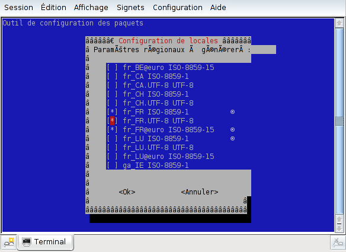
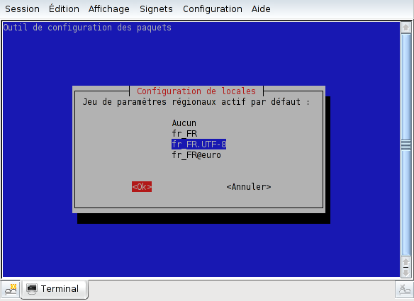
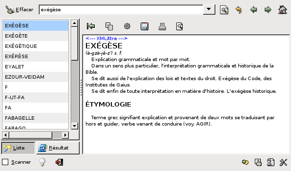
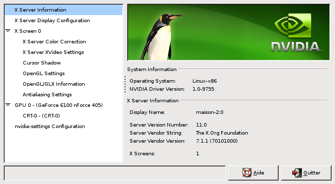

Trucs et Astuces sur Debian Testing
Document version 1.0
Retour à la page d'accueil
Table des matières
Cette rubrique liste quelques trucs et astuces pour gagner du temps dans la configuration
de la Debian Testing de début 2007.
Elle est conçue comme un historique des manipulations que je réalise une fois
le système installé, et elle me sert de guide si j'installe Debian sur
une machine.
Cette section se focalise sur la pratique, après avoir très brièvement
rappelé quelques principes. Wikipedia décrit en détail tout ce qu'il faut
savoir sur les codages existants, je ne vais pas les recopier ici.
2.1.1 Codage des caractères en français - rappels
2.1.1.1 Introduction - tables de caractères existantes
Il existe de nombreuses normes pour encoder les caractères. Même sans parler
des caractères accentués, plusieurs choix existent, dont ASCII et EBCDIC.
L'URL
http://www.dynamoo.com/technical/ascii-ebcdic.htm décrit ces deux standards.
L'EBCDIC est utilisé sur les gros systèmes IBM, les codages
que l'on rencontre en pratique sont tous basés sur ASCII,
http://www.asciitable.com/
ASCII est un standard de fait mais ne code aucun caractère accentué.
Pour y parvenir, plusieurs solutions existent.
| Codepages |
Solution historique, plusieurs constructeurs et éditeurs ayant
créé leurs propres codepages (dont Microsoft et IBM). En règle
générale, les codepages sont compatibles ASCII, mais ce n'est pas obligatoire.
Il est assez difficile de s'y retrouver parmi les codepages existants. Ils sont
sensés être normalisés par l'ANSI, mais cela n'est pas toujours
le cas. Ils constituent le standard historique MS-DOS ® et Windows ®.
MS-DOS ® : les langues d'Europe occidentale (dont le Français) sont
codées avec le codepage 850 (cp850), édité par IBM. Il est identique
à la table "ASCII étendue" (8 bits au lieu de 7 pour ASCII simple).
Windows ® : le codepage d'Europe occidentale est le 1252. Il est
très proche du code ISO-8859-1, il arrive même qu'il y ait des confusions
entre les deux, certains programmes annonçant un affichage ISO-8859-1 alors qu'il
s'agit de cp1252, et vice-versa.
Liste des codepages :
http://www.i18nguy.com/unicode/codepages.html
|
| ISO-8859-* |
Normalisation pour les langues européennes, compatible ASCII.
Liste des codes ISO-8859 :
http://en.wikipedia.org/wiki/Iso-8859. |
| Unicode |
Encodage universel, compatible ASCII.
Le codage "canonique" Unicode est l'encodage sur 16 bits, UTF-16, soit
deux octets. Nous verrons plus loin qu'il existe d'autres codages Unicode.
Les octets peuvent être rangés de deux manières distinctes :
1- Octet de poids fort en premier ("BE", big endian).
2- Octet de poids faible en premier ("LE", little endian).
Un texte Unicode peut démarrer par un BOM (Byte Order Mark), qui indique
l'ordre des octets,
http://unicode.org/unicode/faq/utf_bom.html#22.
Page d'accueil d'Unicode :
http://www.unicode.org. |
| UCS |
UCS = Universal Character Set.
Autre encodage universel, non compatible ASCII (semble-t-il ; UCS est
peu utilisé en Europe). UCS et Unicode sont étroitement liés, Unicode
étant beaucoup plus populaire (en Europe) qu'UCS.
Pas d'URL de référence autre que celle d'Unicode. |
2.1.1.2 Compatibilité ASCII d'un système de codage
"Compatible ASCII" signifie que la base du codage, pour les caractères non
accentués, est ASCII. Ce qui signifie que même si votre système ne reconnaît
pas le codage utilisé, les caractères ASCII (non accentués) seront affichés
correctement. Cela est très pratique, car en Français par exemple, un texte
sans caractères accentués est inconfortable mais parfaitement lisible. Les
codages compatibles ASCII sont donc plus robustes.
2.1.1.3 Codages régionaux
Les codepages et les normes ISO-8859-n ne permettent
de coder que quelques langues simultanément. Ainsi la norme ISO-8859-1, conçue pour les
langues d'Europe occidentale, ne permet pas de coder les caractères islandais, turcs, grecs,
etc.
Les codages ISO-8859-1, ISO-8859-2, ..., couvrent les langues européennes. Pour
le français, les deux normes envisageables sont ISO-8859-1 (Europe occidentale)
et ISO-8859-15 (Europe occidentale + symbole euro et quelques adaptations mineures).
2.1.1.4 Codages universels
Unicode et UCS sont universels, ils permettent de coder n'importe quel
caractère de n'importe quelle langue.
Unicode et UCS sont déclinés en plusieurs codages possibles, adaptés
au contexte. Unicode codé sur un octet a pour nom UTF-8. Cela ne signifie pas
que tout caractère prend un seul octet - un caractère peut nécessiter
entre 1 et 6 octets pour être codé. Avec UTF-8 la notion
d'ordre des octets n'intervient pas, c'est pourquoi le BOM (Byte Order Mark)
est peu utilisé dans ce codage, quoiqu'il existe.
UTF-8 est optimisé pour les langues européennes, car les caractères non accentués sont
codés sur un seul octet. Cela étant, UTF-8, comme tout codage Unicode, est universel.
Coder du français en UTF-16 ou en UTF-32 ne pose aucun problème, mais en moyenne,
le texte prendra le double et le quadruple d'octets pour être représenté, respectivement.
2.1.1.5 Codage du français dans la pratique
Dans la pratique lorsque nous voudrons coder un texte, ou définir un codage par défaut sur Linux,
nous aurons les choix suivants.
Je ne présente pas cp850 ou cp1252 comme des choix, car ils appartiennent
au monde Microsoft, de plus ils tendent à être de moins en moins utilisés y compris sur
Windows ®, où le standard est désormais Unicode.
- ISO-8859-1
Ce codage porte également le nom "latin1". C'est le codage historique.
Le codepage 1252 (Microsoft Windows ®) en est si proche que les
deux sont facilement interchangeables.
- ISO-8859-15
Également désigné par les noms "latin9" ou "euro". Ce codage modifie de
manière mineure ISO-8859-1. L'apport le plus connu est l'ajout du symbole
euro €. Il corrige aussi l'absence de caractère œ.
- UTF-8
Unicode sur 8 bits.
2.1.1.6 Choix d'un codage par défaut
Sur Linux, comment choisir entre ISO-8859-1, ISO-8859-15 et UTF-8 ?
Le tableau suivant liste les points à considérer.
|
ISO-8859-1 ou ISO-8859-15 |
UTF-8 |
| Avantages |
- Codage historique, supporté partout.
- Un octet et un seul pour chaque caractère, ce qui facilite la programmation.
- Très proche de cp1252, ce qui facilite les échanges avec le monde Microsoft ®.
| - Codage universel.
- Unicode est le standard recommandé pour le web.
- Unicode est le standard de fait sur le web. |
| Inconvénients |
- Non universel.
- N'est pas la recommandation officielle pour le web. |
- A tendance à être moins souvent géré que ISO-8859-n.
- Nombre d'octets variable pour représenter un caractère, ce qui
rend ce codage compliqué à gérer en programmation. |
On peut se demander pourquoi je mentionne la facilité de programmation (qui donne
l'avantage à ISO-8859), sachant que la plupart des gens ne sont pas développeurs.
En fait la programmation concerne aussi le contenu web (PHP, Java, Javascript, ...), ce qui
élargit le périmètre.
La complexité d'Unicode explique que certains programmes (anciens) supportent
ISO-8859 uniquement.
2.1.2 Codage des caractères en français - la pratique sur Debian
Une documentation très utile se trouve ici :
http://www.debian.org/doc/manuals/fr/debian-fr-howto/ch3.html
2.1.2.1 Pré-requis - paquetages Debian
Le paquetage locales doit être installé, ce qui est le cas par défaut. Exemple :
sebastien@maison-2:~$ dpkg -l locales
Souhait=inconnU/Installé/suppRimé/Purgé/H=à garder
| État=Non/Installé/fichier-Config/dépaqUeté/échec-conFig/H=semi-installé
|/ Err?=(aucune)/H=à garder/besoin Réinstallation/X=les deux (État,Err: majuscule=mauvais)
||/ Nom Version Description
+++-=========================-=========================-==================================================================
ii locales 2.3.6.ds1-10 GNU C Library: National Language (locale) data [support]
|
2.1.2.2 Choisir entre ISO-8859-1, ISO-8859-15 et UTF-8
Personnellement, je choisis le codage proposé avec Debian par défaut, à savoir,
UTF-8.
Tout ça pour en arriver là ? Eh oui !
Sauf qu'avec les clés USB utilisées sous Windows ®, ça se complique. Même
avec Windows XP ® service pack 2, les noms de fichier
sont toujours en ISO-8859-1 (ou en cp1252, il est difficile de
les différencier).
Résultat, aujourd'hui, j'utilise UTF-8, en sachant que j'ai régulièrement des
caractères accentués dans les noms de fichier qui sont affichés comme un point
d'interrogation.
2.1.2.3 Choisir entre ISO-8859-1 et ISO-8859-15
Si vous souhaitez rester sur un codage ISO-8859, ISO-8859-15 est plus moderne,
sachant que certains programmes risquent de ne pas le gérer. Personnellement, je
l'ai utilisé durant deux ans sans rencontrer de difficulté supplémentaire par rapport à
ISO-8859-1.
2.1.2.4 Choisir la localisation
"Localisation" signifie "réglages régionaux".
Exécuter
dpkg-reconfigure locales
Je recommande de sélectionner les 3 options disponibles pour le français, à
savoir fr_FR, fr_FR.UTF-8 et fr_FR@euro, ensuite
choisir fr_FR.UTF-8 comme codage par défaut.
Ce changement ce n'est pas pris en compte à la volée, pour en voir (en partie) les effets,
il faut ré-ouvrir une session. Cela n'est parfois pas suffisant, et pour écrire
les paragraphes qui suivent, j'ai dû redémarrer Linux.
Copie d'écran (1). Remarquez l'affichage insolite des bordures de cadre, dû au
passage d'ISO-8859-15 à UTF-8 comme codage par défaut, sans
redémarrage de Linux.

Copie d'écran (2). Pour cette deuxième image, je n'avais pas modifié le
codage en cours de route, donc les bordures sont affichées correctement.

Les codages que vous sélectionnez sont listés dans /etc/locale.gen.
Mon fichier /etc/locale.gen :
fr_FR.UTF-8 UTF-8
fr_FR@euro ISO-8859-15
fr_FR ISO-8859-1
|
2.1.2.5 Afficher la localisation en cours
Quel est ma localisation ? Exécuter la commande set | grep LANG pour
avoir simplement le codage, la commande locale pour tout afficher.
Exemples :
Afficher uniquement le codage des caractères
sebastien@maison-2:~$ set | grep LANG
LANG=fr_FR@euro
Exemple avec "fr_FR ISO-8859-1" sélectionné par défaut
maison-2:~# locale
LANG=fr_FR
LC_CTYPE="fr_FR"
LC_NUMERIC="fr_FR"
LC_TIME="fr_FR"
LC_COLLATE="fr_FR"
LC_MONETARY="fr_FR"
LC_MESSAGES="fr_FR"
LC_PAPER="fr_FR"
LC_NAME="fr_FR"
LC_ADDRESS="fr_FR"
LC_TELEPHONE="fr_FR"
LC_MEASUREMENT="fr_FR"
LC_IDENTIFICATION="fr_FR"
LC_ALL=
Exemple avec "fr_FR@euro ISO-8859-15" sélectionné par défaut
maison-2:~# locale
LANG=fr_FR@euro
LC_CTYPE="fr_FR@euro"
[...]
LC_IDENTIFICATION="fr_FR@euro"
LC_ALL=
Exemple avec "fr_FR.UTF-8 UTF-8" sélectionné par défaut
maison-2:~# locale
LANG=fr_FR.UTF-8
LC_CTYPE="fr_FR.UTF-8"
[...]
LC_IDENTIFICATION="fr_FR.UTF-8"
LC_ALL=
|
2.1.2.6 Identifier le codage utilisé dans un texte
Le texte peut être contenu dans un fichier, ou bien être un nom de fichier.
Une méthode est de choisir un type de codage (sur le navigateur ou dans un terminal X,
c'est possible avec la plupart des terminaux) et de contrôler l'affichage des caractères.
Si vous avez choisi UTF-8 et que les accents s'affichent bien, c'est que le
contenu est UTF-8, idem avec ISO-8859-1 et -15
Une autre méthode, radicale, qui a l'avantage d'être fiable à 100%, consiste
à afficher les octets du fichier (ou du nom de fichier) que l'on souhaite examiner.
Ainsi j'ai écrit la chaîne
-é-
dans un fichier alpha, que j'ai codé de deux manières différentes, j'expliquerai plus
loin comment.
Contenu binaire des fichiers selon le codage.
maison-2:~# hexdump -e '"" 1/1 "%02x" "\n"' alpha.iso-8859-15
2d
e9
2d
0a
maison-2:~# hexdump -e '"" 1/1 "%02x" "\n"' alpha.utf-8
2d
c3
a9
2d
0a
|
Tous les codes qui suivent sont écrits en hexadécimal.
En ISO-8859-15, le e minuscule accent aigu, é, est codé sur un seul octet, e9.
En UTF-8, le é est codé sur deux octets, c3 puis a9.
Autre exemple, avec un nom de fichier.
maison-2:~# set | grep LANG
LANG=fr_FR.UTF-8
maison-2:~# touch -- -é-
maison-2:~# ls -- -é-
-é-
maison-2:~# ls -- -é- | hexdump -e '"" 1/1 "%02x" "\n"'
2d
c3
a9
2d
0a
|
Et si on passe au codage par défaut ISO-8859-15, que se passe-t-il ?
A noter qu'entre les deux manipulations, j'ai redémarré Linux.
maison-2:~# set | grep LANG
LANG=fr_FR@euro
maison-2:~# touch -- -é-2
maison-2:~# ls -- -é-2
-é-2
maison-2:~# ls -- -é-2 | hexdump -e '"" 1/1 "%02x" "\n"'
2d
e9
2d
32
0a
maison-2:~# ls -l
total 148
-rw-r--r-- 1 root root 0 2007-02-11 13:06 -é-
-rw-r--r-- 1 root root 0 2007-02-11 14:05 -é-2
maison-2:~# ls -- -é- | hexdump -e '"" 1/1 "%02x" "\n"'
2d
c3
a9
2d
0a
|
Les noms de fichier sont écrits tels quels dans le système de fichier, et
dans l'exemple qui précède, un codage ISO-8859-15 et UTF-8 cohabitent.
On voit ici qu'en passant à ISO-8859-15, le fichier créé avec un nom codé en
UTF-8 (car créé alors que le codage par défaut était UTF-8)
n'est plus affiché correctement. La séquence é est typique d'un texte UTF-8
affiché en ISO-8859-1. A l'inverse, un texte ISO-8859-15 affiché en UTF-8
produira des points d'interrogation, car la plupart des codes latin9 produisent des séquences
UTF-8 illégales. Exemple :
maison-2:/mnt/usb2# ls z*
z?
maison-2:/mnt/usb2# ls z* | hexdump -e '"" 1/1 "%02x" "\n"'
7a
e9
0a
|
Ici le ? était un e accent aigu, ce ce que l'on peut voir avec la
commande hexdump.
Durant la rédaction de ces pages, il m'est
arrivé par erreur de créer deux fichiers différents ayant même nom, mais
encodés différemment - pour le système de fichiers, ils étaient bien distincts.
Ce mode de fonctionnement déporte dans l'espace utilisateur les problèmes
de représentation des caractères. C'est une règle générale, que j'ai constatée
sur tous les systèmes de fichiers, y compris VFAT (le plus utilisé sur clé USB).
2.1.2.7 Cas particulier du système de fichier VFAT
Ce système et, de manière différente, NTFS, permet de définir
un jeu de caractère, avec l'option iocharset. Saut que cela ne
permet pas d'afficher convenablement des caractères ISO-8859-1 sur une console
UTF-8, ni l'inverse. Exemple :
maison-2:/mnt/usb2# set | grep LANG
LANG=fr_FR.UTF-8
maison-2:/mnt/usb2# mount
[...]
/dev/sdg1 on /misc/usb2 type vfat (rw,noexec,nosuid,nodev,sync,umask=000,iocharset=iso8859-15)
maison-2:/mnt/usb2# ls z*
z?
maison-2:/mnt/usb2# ls z* | hexdump -e '"" 1/1 "%02x" "\n"'
7a
e9
0a
|
Ici, /mnt/usb2 (clé USB) est monté avec l'option ISO-8859-15, ce qui ne permet
pas pour autant d'afficher les accents. Inversement, avec une localisation
ISO-8859-15, les caractères UTF-8 ne s'affichent pas correctement.
Si quelqu'un sait comment gérer cette situation autrement qu'en utilisant
fr_FR@euro comme localisation par défaut, je lui en serais reconnaissant...
2.1.2.8 Convertir un fichier d'UTF-8 en ISO-8859-15 avec Vi
Je parle d'un fichier texte, et je ne traiterai pas le cas du BOM
(Byte Order Mark). Sachez que Vi sait gérer le BOM, avec l'option
bomb.
Naturellement, dans tout ce qui suit, ISO-8859-15 peut être remplacé par
ISO-8859-1.
- Ouvrir le fichier dans Vi, en exécutant
vi
Surtout n'exécutez pas vi nom_fichier. Vi tentera de déterminer
tout seul le type du fichier, et si le fichier contient des séquences illégales,
le résultat peut être inattendu.
- Exécuter les commandes Vi suivantes
:e ++enc=utf-8 nom_fichier
:set fileencoding=iso-8859-15
:wq!
2.1.2.9 Convertir un fichier d'ISO-8859-15 en UTF-8 avec Vi
- Ouvrir le fichier dans Vi, en exécutant
vi
- Exécuter les commandes Vi suivantes
:e ++enc=iso-8859-15 nom_fichier
:set fileencoding=utf-8
:wq!
L'exécution de vi -c ":set fileencoding=..." ne fonctionne pas, car c'est comme
si cette commande était exécutée à la main, après l'ouverture du fichier par Vi,
donc après que Vi a déterminé le type d'encodage du fichier.
Naturellement, ces manipulations fonctionnent aussi avec vim (invoqué
à la place de vi de manière transparente) et gvim.
2.1.2.10 Le programme convmv
Ce programme est capable de modifier l'encodage des noms de fichier donnés en paramètre.
Il convertit les noms des fichiers, pas leur contenu... Il fait partie du paquetage convmv.
Exemple de commande, pour convertir depuis latin1 vers utf-8, dans tous les répertoires, récursivement :
convmv -f latin1 -t utf-8 --notest -r *
Nous allons modifier la configuration de PAM.
Plus loin dans ce document, un paragraphe évoque (rapidement) PAM,
Remarque au sujet de PAM
Dans le fichier /etc/pam.d/su, dé-commenter la ligne
auth sufficient pam_wheel.so trust
Ensuite, créer le groupe wheel et y ajouter les utilisateurs qui
doivent pouvoir devenir root en exécutant su, sans mot de passe.
Exemple :
maison-2:~# groupadd wheel
maison-2:~# groups sebastien
sebastien : sebastien dialout cdrom floppy audio video plugdev netdev powerdev
maison-2:~# usermod -G sebastien,dialout,cdrom,floppy,audio,video,plugdev,netdev,powerdev,wheel sebastien
maison-2:~# groups sebastien
sebastien : sebastien dialout cdrom floppy audio video plugdev netdev powerdev wheel
Fichier /etc/pam.d/su après modification (quelques commentaires ont été enlevés)
#
# The PAM configuration file for the Shadow `su' service
#
# This allows root to su without passwords (normal operation)
auth sufficient pam_rootok.so
[...]
# Uncomment this if you want wheel members to be able to
# su without a password.
auth sufficient pam_wheel.so trust
[...]
session required pam_env.so readenv=1
[...]
session required pam_env.so readenv=1 envfile=/etc/default/locale
[...]
session optional pam_mail.so nopen
@include common-auth
@include common-account
@include common-session
|
Utilisation d'un autre groupe
Le groupe wheel est particulier. Si vous préférez passer par un autre groupe,
ajouter la ligne suivante :
auth sufficient pam_succeed_if.so use_uid user ingroup nom_groupe
|
Nous allons voir l'installation et l'utilisation du système autofs, version 4.
KDE et Gnome savent gérer le montage automatique de volume, grâce au
système d-bus. d-bus fonctionne de manière irréprochable, mais personnellement,
je trouve autofs encore plus pratique. Avec autofs, un volume peut être monté
automatiquement au moment où l'on s'en sert, et démonté ensuite, après
un délai réglable. Il n'y a pas à cliquer où que ce soit, ça fonctionne en mode texte,
et c'est 100% automatique.
Ce système sert aussi aux CDROM, mais il lui arrive de provoquer des perturbations
avec des graveurs de CD tels que k3b.
Bref.
2.3.1 Pré-requis
2.3.1.1 Paquetages Debian
Le paquetage s'appelle autofs. Exemple sur ma Debian.
sebastien@maison-2:~$ dpkg -l autofs
Souhait=inconnU/Installé/suppRimé/Purgé/H=à garder
| État=Non/Installé/fichier-Config/dépaqUeté/échec-conFig/H=semi-installé
|/ Err?=(aucune)/H=à garder/besoin Réinstallation/X=les deux (État,Err: majuscule=mauvais)
||/ Nom Version Description
+++-==========================-==========================-====================================================================
ii autofs 4.1.4-13 kernel-based automounter for Linux
|
2.3.1.2 Options de compilation du noyau
Pour utiliser autofs, il est inutile de recompiler le noyau
Si toutefois vous le recompilez, il faut inclure l'option AUTOFS4_FS,
qui se trouve dans la partie File systems. Le titre de cette option est
Kernel automounter version 4 support (also supports v3).
2.3.2 Service autofs
Le service s'appelle autofs et est démarré comme tout service, grâce à
un script dans /etc/init.d référencé dans différents runlevel. Quand le
paquetage est installé, le service est configuré pour être lancé automatiquement
au démarrage de la machine. Vous pouvez le vérifier avec rcconf
(paquetage rcconf), service autofs, qui doit être coché.
Comme d'habitude, le fonctionnement d'autofs en tant que service est
contrôlé dans le fichier /etc/default/autofs.
Fichier /etc/default/autofs
# Timeout value in seconds (default: 300)
TIMEOUT=300
# Direct maps are only partially implemented
# and could silently break things. See /usr/share/doc/autofs/README.direct for information
# about current limitations and check your configurations before enabling them.
DISABLE_DIRECT=1
# The LDAP URI for auto.master
# (e. g. LDAPURI="ldap://ldapserver.example.com/")
#LDAPURI=
# The LDAP base for auto.master
# (e. g. LDAPBASE="ou=auto.master,ou=Automount,dc=example,dc=com")
#LDAPBASE=
# Restart autofs automatically on upgrades -- normally, you want this, but
# if you have critical files on autofs-mounted directories (the new autofs
# .deb file, for instance), you may want to set this to 1
#AUTOFS_DONT_RESTART_ON_UPGRADES=
|
2.3.3 Configuration d'autofs
La configuration d'autofs est effectuée dans le fichier /etc/auto.master,
l'usage étant d'utiliser des sous-fichiers de nom /etc/auto.*.
En cas de changement de la configuration, il faut redémarrer le service, en
exécutant la commande
/etc/init.d/autofs restart
Mon fichier /etc/auto.master
#
# $Id: auto.master,v 1.4 2005/01/04 14:36:54 raven Exp $
#
# Sample auto.master file
# This is an automounter map and it has the following format
# key [ -mount-options-separated-by-comma ] location
# For details of the format look at autofs(5).
#/misc /etc/auto.misc --timeout=60
#/smb /etc/auto.smb
/misc /etc/auto.misc --timeout=5
#/net /etc/auto.net
|
Mon fichier /etc/auto.misc
#
# $Id: auto.misc,v 1.2 2003/09/29 08:22:35 raven Exp $
#
# This is an automounter map and it has the following format
# key [ -mount-options-separated-by-comma ] location
# Details may be found in the autofs(5) manpage
cdrom -fstype=iso9660,ro,nosuid,nodev,noexec :/dev/cdrom
usb1 -fstype=vfat,sync,nosuid,nodev,noexec,umask=000,iocharset=iso8859-15 :/dev/sdf1
usb2 -fstype=vfat,sync,nosuid,nodev,noexec,umask=000,iocharset=iso8859-15 :/dev/sdg1
# the following entries are samples to pique your imagination
[...]
|
Ces fichiers configurent autofs ainsi :
- En cas d'accès à
/misc/cdrom, /misc/cdrom est monté
automatiquement sur le périphérique /dev/cdrom. Idem avec usb1 et usb2.
- Option --timeout=5 -> Une fois sorti du système de fichier,
il est démonté automatiquement après 5 secondes.
- Quelques options règlent le montage des systèmes de fichier :
- iso9660, vfat -> Type du système de fichier.
- ro -> Le CD est en lecture seule.
- nosuid,nodev,noexec -> Options de sécurité.
- sync -> Les opérations d'écriture sur la clé USB sont faites de
manière synchrone. Cela diminue de risque de corrompre la clé si elle est débranchée
inopinément. D'après la documentation de mount, seuls les systèmes de fichiers ext2 et ext3
gèrent cette option. À voir.
- umask=000 -> Les utilisateurs ont tous les droits
sur la clé.
- iocharset=iso8859-15 -> Est sensé prendre en compte cet encodage
sur la clé. Dans la pratique, ne sert à rien (?).
autofs crée à la volée le répertoire /misc. Les sous-répertoires de
/misc (/misc/cdrom, ...) ne sont pas visibles tant que
l'on n'y accède pas. L'accès peut consister à lire le contenu, ou bien à le définir
comme répertoire courant (commande cd /misc/cdrom). Si l'on se
contente de lire le contenu, le périphérique est monté, lu, puis après 5 secondes,
il est démonté. Comme ce mécanisme est transparent, cela ne pose aucun problème.
Exemple :
maison-2:~# cd /misc
maison-2:/misc# ls -l
total 0
maison-2:/misc# cd cdrom
-su: cd: cdrom: Aucun fichier ou répertoire de ce type
maison-2:/misc# ls -l
total 0
[insertion d'un DVD dans le lecteur]
maison-2:/misc# cd cdrom
maison-2:/misc/cdrom# ls
autorun.bat debian doc isolinux pics README.html README.mirrors.txt tools
autorun.inf dists install md5sum.txt pool README.mirrors.html README.txt
maison-2:/misc/cdrom# cd ..
maison-2:/misc# ls -l
total 4
dr-xr-xr-x 10 root root 4096 2005-06-05 14:36 cdrom
[attente de quelques secondes]
maison-2:/misc# ls -l
total 0
maison-2:/misc#
|
Le fonctionnement décrit ci-dessus manque de confort car on ne voit pas
le répertoire tant que l'on n'y a pas accédé. Du coup, la complétion
automatique (ligne de commande du shell) ne fonctionne pas, et dans
un programme graphique tel que Konqueror, il faut saisir
leur nom au clavier.
La solution consiste à créer des liens symboliques pointant sur les répertoires
gérés par autofs.
J'ai créé /mnt/cdrom pointant sur /misc/cdrom, idem pour
usb1 et usb2. Résultat, /mnt/cdrom est
toujours visible, et il est monté et démonté automatiquement. Exemple :
maison-2:~# cd /mnt
maison-2:/mnt# ls -l
total 0
maison-2:/mnt# ln -s /misc/cdrom cdrom
maison-2:/mnt# ln -s /misc/usb1 usb1
maison-2:/mnt# ln -s /misc/usb2 usb2
maison-2:/mnt# ls -l
total 0
lrwxrwxrwx 1 root root 11 2007-02-17 12:36 cdrom -> /misc/cdrom
lrwxrwxrwx 1 root root 10 2007-02-17 12:37 usb1 -> /misc/usb1
lrwxrwxrwx 1 root root 10 2007-02-17 12:37 usb2 -> /misc/usb2
maison-2:/mnt# cd cdrom
-su: cd: cdrom: Aucun fichier ou répertoire de ce type
maison-2:/mnt#
|
Avec ce système, j'accède au CD et aux deux ports USB uniquement
à travers les noms /mnt/cdrom, /mnt/usb1 et
/mnt/usb2, qui sont toujours visibles.
Je vais décrire plusieurs opérations :
- Création et utilisation d'un volume chiffré
- Montage d'un volume chiffré au login d'un utilisateur, à la volée
- Montage d'un volume chiffré au démarrage de Linux
2.4.1 Pré-requis
2.4.1.1 Paquetages Debian
Le paquetage s'appelle cryptsetup. Il dépend (entre autres) de
dmsetup. Exemple sur ma Debian.
maison-2:~# dpkg -l "*setup"
Souhait=inconnU/Installé/suppRimé/Purgé/H=à garder
| État=Non/Installé/fichier-Config/dépaqUeté/échec-conFig/H=semi-installé
|/ Err?=(aucune)/H=à garder/besoin Réinstallation/X=les deux (État,Err: majuscule=mauvais)
||/ Nom Version Description
+++-=============================-=============================-==========================================================================
[...]
ii cryptsetup 1.0.4+svn26-1 configures encrypted block devices
ii dmsetup 1.02.08-1 The Linux Kernel Device Mapper userspace library
[...]
|
2.4.1.2 Options de compilation du noyau
TODO
La commande cryptsetup permet de créer un volume chiffré. Elle
peut être vue comme un raccourci simplifié des commandes permettant de créer un
volume chiffré avec dmsetup seul.
Exemple de création d'un volume chiffré.
sebastien@maison-2:~$ /sbin/cryptsetup -c twofish -h sha512 -s 256 create _my_ciphered_dev_sda5 /dev/sda5
Command failed: Incompatible libdevmapper 1.02.08 (2006-07-17)(compat) and kernel driver
sebastien@maison-2:~$ su -
maison-2:~# /sbin/cryptsetup -c twofish -h sha512 -s 256 create _my_ciphered_dev_sda5 /dev/sda5
Enter passphrase:
maison-2:~# dmsetup info _my_ciphered_dev_sda5
Name: _my_ciphered_dev_sda5
State: ACTIVE
Tables present: LIVE
Open count: 0
Event number: 0
Major, minor: 254, 0
Number of targets: 1
maison-2:~# dmsetup table _my_ciphered_dev_sda5
0 18249777 crypt twofish-cbc-plain 755f22d17396775dc2f8525a9aca98b47c0248c892f11dfb9355487be88851c8 0 8:5 0
maison-2:~# cryptsetup status _my_ciphered_dev_sda5
/dev/mapper/_my_ciphered_dev_sda5 is active:
cipher: twofish-cbc-plain
keysize: 256 bits
device: /dev/.static/dev/sda5
offset: 0 sectors
size: 18249777 sectors
mode: read/write
|
Remarque
Lorsque cryptsetup est exécuté sans les privilèges super-utilisateur,
cela produit l'erreur "Incompatible libdevmapper..." que l'on peut voir ci-dessus.
2.4.3 Utilisation d'un volume chiffré
Un volume géré par dmsetup est vu comme /dev/mapper/nom_dm.
Ainsi le volume créé tout-à-l'heure est vu comme
/dev/mapper/_my_ciphered_dev_sda5. Ce nom de volume doit ensuite être
utilisé comme un volume normal, pour y créer un système de fichier, le monter, etc.
Exemple.
maison-2:~# mkfs.ext3 /dev/mapper/_my_ciphered_dev_sda5
[...]
maison-2:~# mkdir /mnt/rep_chiffre
maison-2:~# mount -t ext3 /dev/mapper/_my_ciphered_dev_sda5 /mnt/rep_chiffre
maison-2:~# ls -al /mnt/rep_chiffre
total 24
drwxr-xr-x 3 root root 4096 2007-02-17 15:39 .
drwxr-xr-x 3 root root 4096 2007-02-17 15:40 ..
drwx------ 2 root root 16384 2007-02-17 15:39 lost+found
maison-2:~# mount
[...]
/dev/mapper/_my_ciphered_dev_sda5 on /mnt/rep_chiffre type ext3 (rw)
maison-2:~#
|
2.4.4 Montage d'un volume chiffré au login
Rédigé d'après un article paru dans Linux Magazine.
Le volume chiffré monté au login sera le répertoire personnel de l'utilisateur,
qui sera /chome/sebastien.
L'URL http://EncryptionHOWTO.sourceforge.net est
un peu datée (2000 ; elle ne parle pas du device mapper) mais elle peut être utile.
2.4.4.1 Pré-requis - paquetages Debian
Le paquetage pour monter un volume chiffré à la volée est libpam-mount. Il permet
également le montage de volumes SAMBA (partage Windows) et NFS. Le paquetage
openssl est également requis, pour chiffrer le fichier contenant la clé.
Sur ma Debian :
sebastien@maison-2:~$ dpkg -l libpam-mount
Souhait=inconnU/Installé/suppRimé/Purgé/H=à garder
| État=Non/Installé/fichier-Config/dépaqUeté/échec-conFig/H=semi-installé
|/ Err?=(aucune)/H=à garder/besoin Réinstallation/X=les deux (État,Err: majuscule=mauvais)
||/ Nom Version Description
+++-=========================-=========================-==================================================================
ii libpam-mount 0.18-3 PAM module that can mount volumes for a user session
sebastien@maison-2:~$ dpkg -l openssl
Souhait=inconnU/Installé/suppRimé/Purgé/H=à garder
| État=Non/Installé/fichier-Config/dépaqUeté/échec-conFig/H=semi-installé
|/ Err?=(aucune)/H=à garder/besoin Réinstallation/X=les deux (État,Err: majuscule=mauvais)
||/ Nom Version Description
+++-=========================-=========================-==================================================================
ii openssl 0.9.8c-4 Secure Socket Layer (SSL) binary and related cryptographic tools
|
Naturellement, libpam-mount ne fonctionne que si PAM est utilisé. C'est le cas par défaut.
Remarque au sujet de PAM
PAM signifie Pluggable Authentication Modules, c'est un système
permettant de gérer l'authentification.
Son point fort est d'être conçu dès l'origine comme étant totalement configurable à l'aide de
modules. PAM est configuré dans le fichier /etc/pam.conf et surtout dans
le répertoire /etc/pam.d. Les modules se trouvent dans /lib/security.
Ses possibilités sont illimitées.
Page d'accueil de PAM : http://www.kernel.org/pub/linux/libs/pam
Manuels PAM : http://www.kernel.org/pub/linux/libs/pam/Linux-PAM-html
Documentation sur l'authentification Linux : http://www.faqs.org/docs/Linux-HOWTO/User-Authentication-HOWTO.html
2.4.4.2 Volume chiffré - préparation
Méthode employée :
- Créer une clé aléatoire (de 256 bits), qui servira ultérieurement à chiffrer le volume
- Chiffrer cette clé avec le même mot de passe du login de l'utilisateur, et l'écrire dans un fichier
- Créer un volume chiffré en déchiffrant à la volée le contenu du fichier, grâce au mot de passe du login
- Au login de l'utilisateur, libpam-mount retrouvera la clé de chiffrement du volume en déchiffrant
le fichier grâce au mot de passe du login
Ainsi la clé de chiffrement du volume n'est jamais enregistrée en clair - si quelqu'un parvient à récupérer
le fichier contenant la clé, il ne peut rien en faire sans le mot de passe.
Création du fichier contenant la clé de chiffrement
Des exemples très utiles sont donnés dans le fichier /usr/share/doc/libpam-mount/README.Debian.gz,
et ce qui suit (y compris la configuration de libpam-mount) ne fait que le copier.
Ci-dessous nous utilisons dd avec /dev/urandom pour produire 32
octets aléatoires (soit 256 bits), que nous chiffrons avec openssl.
Ensuite nous donnons au fichier le propriétaire et les droits appropriés, car même s'il est chiffré,
autant ne pas exposer son contenu.
Ci-dessous, l'utilisateur lui-même ne peut pas modifier le fichier contenant la clé.
C'est aussi bien comme ça, autant faire ce genre de manipulation en tant que root.
Attention, la perte de ce fichier signifie la perte irrémédiable du volume chiffré !
maison-2:~# dd if=/dev/urandom bs=1c count=32 | openssl enc -aes-256-ecb > /home/sebastien.key
32+0 enregistrements lus
32+0 enregistrements écrits
32 octets (32 B) copiés, 0,000130692 seconde, 245 kB/s
enter aes-256-ecb encryption password:[saisie du mot de passe du login de l'utilisateur]
Verifying - enter aes-256-ecb encryption password:[saisie du mot de passe du login de l'utilisateur]
maison-2:~# chown sebastien.sebastien /home/sebastien.key
maison-2:~# chmod 400 /home/sebastien.key
maison-2:~# ls -l /home
[...]
-r-------- 1 sebastien sebastien 64 2007-02-18 16:21 sebastien.key
[...]
|
Protéger le fichier sur ext2 ou ext3
Avec chattr, le fichier peut être verrouillé à 100%. Même le super-utilisateur
ne pourra pas le modifier ni le supprimer, sauf à ôter la protection décrite ci-dessous.
maison-2:/home# chattr +i sebastien.key
maison-2:/home# lsattr sebastien.key
----i------------- sebastien.key
maison-2:/home# rm sebastien.key
rm: détruire un fichier protégé en écriture fichier régulier `sebastien.key'? y
rm: ne peut enlever `sebastien.key': Opération non permise
|
Création du volume chiffré
maison-2:~# openssl enc -d -aes-256-ecb -in /home/sebastien.key | cryptsetup -c twofish -h sha512 -s 256 create _dev_sda5 /dev/sda5
enter aes-256-ecb decryption password:[saisie du mot de passe du login de l'utilisateur]
maison-2:~#
|
A ce stade nous disposons d'un volume /dev/mapper/_dev_sda5, chiffré avec une clé se
trouvant dans le fichier /home/sebastien.key, lequel fichier est lui-même chiffré
avec le mot de passe de sebastien.
Il est donc question ici de deux chiffrements bien distincts :
- Le chiffrement du fichier
/home/sebastien.key
- Algorithme : aes-256-ecb
- Clé : mot de passe du login de l'utilisateur
sebastien
- Le chiffrement du volume
/dev/sda5
- Algorithme : twofish, hash : sha512, taille de clé : 256 bits
- Clé : le contenu (décodé) de
/home/sebastien.key
2.4.4.3 Configuration de libpam-mount
Fichier /etc/security/pam_mount.conf
J'ai laissé uniquement les lignes non commentées, et mis en gras les lignes modifiées par rapport
au fichier d'origine.
[...]
debug 0
[...]
mkmountpoint 0
[...]
fsckloop /dev/loop7
[...]
options_allow nosuid,nodev,loop,encryption,fsck
[...]
options_require nosuid,nodev
[...]
lsof /usr/bin/lsof %(MNTPT)
fsck /sbin/fsck -p %(FSCKTARGET)
losetup /sbin/losetup -p0 "%(before=\"-e\" CIPHER)" "%(before=\"-k\" KEYBITS)" %(FSCKLOOP) %(VOLUME)
unlosetup /sbin/losetup -d %(FSCKLOOP)
cifsmount /bin/mount -t cifs //%(SERVER)/%(VOLUME) %(MNTPT) -o "user=%(USER),uid=%(USERUID),gid=%(USERGID)%(before=\",\" OPTIONS)"
smbmount /usr/bin/smbmount //%(SERVER)/%(VOLUME) %(MNTPT) -o "username=%(USER),uid=%(USERUID),gid=%(USERGID)%(before=\",\" OPTIONS)"
ncpmount /usr/bin/ncpmount %(SERVER)/%(USER) %(MNTPT) -o "pass-fd=0,volume=%(VOLUME)%(before=\",\" OPTIONS)"
smbumount /usr/bin/smbumount %(MNTPT)
ncpumount /usr/bin/ncpumount %(MNTPT)
fusemount /sbin/mount.fuse %(VOLUME) %(MNTPT) "%(before=\"-o\" OPTIONS)"
fuseumount /usr/bin/fusermount -u %(MNTPT)
[...]
umount /bin/umount %(MNTPT)
[...]
lclmount /bin/mount -p0 -t %(FSTYPE) %(VOLUME) %(MNTPT) "%(before=\"-o\" OPTIONS)"
cryptmount /bin/mount -t crypt "%(before=\"-o\" OPTIONS)" %(VOLUME) %(MNTPT)
nfsmount /bin/mount %(SERVER):%(VOLUME) %(MNTPT) "%(before=\"-o\" OPTIONS)"
mntagain /bin/mount --bind %(PREVMNTPT) %(MNTPT)
[...]
mntcheck /bin/mount # For BSDs (don't have /etc/mtab)
pmvarrun /usr/sbin/pmvarrun -u %(USER) -o %(OPERATION)
[...]
volume sebastien crypt - /dev/sda5 /chome/sebastien exec,fsck,nodev,nosuid,fstype=ext3,cipher=twofish,hash=sha512,keysize=256 aes-256-ecb /home/sebastien.key
[...]
|
L'option mkmountpoint vaut 1 par défaut, comme le répertoire de montage sera créé d'avance,
je préfère la mettre à 0.
Ici le montage est effectué dans /chome/sebastien.
Fichier /etc/pam.d/common-pammount
En cas d'échec du montage du volume chiffré, il faut demander à libpam-mount de faire
échouer le login - en effet, c'est le répertoire personnel de l'utilisateur qui est monté.
Pour ce faire, nous allons remplacer optional par required
dans les lignes auth et session.
Comme d'habitude, j'ai enlevé les commentaires et mis en gras les lignes modifiées.
[...]
auth required pam_mount.so use_first_pass
session required pam_mount.so use_first_pass
[...]
|
l'option use_first_pass évite de demander plusieurs fois le mot de passe à
l'utilisateur.
2.4.4.4 Répertoire de montage
Par défaut, un répertoire monté a pour propriétaire root.root et comme droits, 755 (=> pas
d'accès en écriture pour les utilisateurs autres que root). Comme il s'agit d'un répertoire
personnel, c'est ennuyeux : l'utilisateur doit avoir accès en écriture à son répertoire
personnel, de plus il doit pouvoir en interdire l'accès aux autres utilisateurs s'il le souhaite.
La commande mount ne permet pas de régler cela, et je n'ai pas trouvé de solution
avec libpam-mount ou cryptsetup, ni avec tune2fs. La solution que
j'ai trouvée consiste à :
- Monter le répertoire
- Définir le propriétaire du répertoire
- Définir le niveau d'accès
- Démonter le répertoire
Naturellement les commandes à exécuter sont :
maison-2:~# mkdir /chome
maison-2:~# mkdir /chome/sebastien
maison-2:~# mount -t ext3 /dev/mapper/_dev_sda5 /chome/sebastien
maison-2:~# mount
[...]
/dev/mapper/_dev_sda5 on /chome/sebastien type ext3 (rw)
maison-2:~# chown sebastien.sebastien /chome/sebastien
maison-2:~# chmod 750 /chome/sebastien
maison-2:~# umount /chome/sebastien
|
Lors de montages ultérieurs, ces informations sont rémanentes.
Pourquoi ?
Je l'ignore, et si quelqu'un pouvait m'éclairer, ça m'arrangerait.
Il semble que le propriétaire et les droits après mount
sont totalement distincts de ce qu'ils sont avant.
Bref, à l'arrivée, le répertoire /chome/sebastien a les bons droits et propriétaire,
mais cette solution est gruiiik car j'ignore l'origine de cette rémanence, et il est
possible que l'information "saute" un jour.
sebastien@maison-2:~$ ls -l /chome
total 4
drwxr-x--- 23 sebastien sebastien 4096 2007-02-18 15:46 sebastien
|
2.4.4.5 Répertoire personnel de l'utilisateur
A modifier avec la commande
usermod -d nouveau_répertoire -u login
2.4.4.6 Montage au login console
Par "login console" on entend le login en mode texte dans l'un des 6 terminaux
virtuels qui existent par défaut (Alt+F1..Alt+F6 ou bien Ctrl+Alt+F1..Ctrl+Alt+F6
depuis l'interface graphique).
Fichier /etc/pam.d/login
Il faut ajouter la ligne
@include common-pammount
après les inclusions de common-auth et common-session.
[...]
# Added by Sébastien Millet, February 2007
@include common-pammount
|
2.4.4.7 Montage au login kdm
kdm est le pendant de xdm avec KDE, pour se loguer en mode graphique.
Faire dans le fichier /etc/pam.d/kdm, la même chose que décrit précédemment
avec /etc/pam.d/login.
Comme ce fichier est court, je vais en donner l'intégralité ici :
#
# /etc/pam.d/kdm - specify the PAM behaviour of kdm
#
auth required pam_nologin.so
auth required pam_env.so readenv=1
auth required pam_env.so readenv=1 envfile=/etc/default/locale
@include common-auth
session required pam_limits.so
@include common-account
@include common-password
@include common-session
# Added by Sébastien Millet, February 2007
@include common-pammount
|
Même chose avec gdm, pour lequel il faut modifier /etc/pam.d/gdm (non testé).
2.4.4.8 Remarques
Effets de bord lorsque le répertoire personnel d'un utilisateur n'est pas toujours disponible
Certains programmes tels que procmail ou spamassassin prennent
en compte des fichiers ou répertoires se trouvant dans le répertoire
personnel, même lorsque l'utilisateur n'est pas logué. Pour contourner la difficulté il
faut, au choix :
- Déplacer les fichiers dans un répertoire toujours disponible, et créer
des liens symboliques. Il faut créer ces mêmes liens symboliques
dans le répertoire non monté.
- Pour procmail, il faut déplacer le fichier
~/.procmailrc
- Pour spamassassin, il faut déplacer le répertoire
~/.spamassassin
- Configurer les programmes pour ne pas prendre en compte les fichiers
personnels. Bon courage !
Programme pmvarrun
Pour démonter automatiquement un volume lorsque l'utilisateur ferme la session,
libpam-mount comptabilise le nombre de login avec le programme pmvarrun.
Si le décompte est erroné, pmvarrun permet de modifier ce décompte, en indiquant
la quantité à ajouter avec l'option -o (0 = afficher le décompte courant, sans le modifier).
Exemple avec un seul login en cours pour l'utilisateur sebastien:
maison-2:~# pmvarrun -u sebastien -o 0
1
|
2.4.5 Montage d'un volume chiffré au démarrage
Après avoir créé le volume, cf. 2.4.2 Création d'un volume chiffré,
modifier les fichiers /etc/default/cryptdisks et /etc/crypttab. Exemple
avec également une partition swap chiffrée :
Fichier /etc/default/cryptdisks
# Run cryptdisks at startup ?
CRYPTDISKS_ENABLE=Yes
# Mountpoints to mount, before starting cryptsetup. This is useful for
# keyfiles on removable media. Seperate mountpoints by space.
CRYPTDISKS_MOUNT=""
# Default check script, see /lib/cryptsetup/checks/
# Takes effect, if the 'check' option is set in crypttab without a value
CRYPTDISKS_CHECK=vol_id
# Default precheck script, see
# Takes effect, if the 'precheck' option is set in crypttab without a value
CRYPTDISKS_PRECHECK=
# Default timeout in seconds for password prompt
# Takes effect, if the 'timeout' option is set in crypttab without a value
CRYPTDISKS_TIMEOUT=180
|
Fichier /etc/crypttab
# <target device> <source device> <key file> <options>
chome /dev/hda8 none cipher=twofish
cswap /dev/hda6 /dev/random cipher=twofish,swap
|
Fichier /etc/fstab
# /etc/fstab: static file system information.
#
# <file system> <mount point> <type> <options> <dump> <pass>
[...]
/dev/mapper/cswap none swap sw 0 0
[...]
/dev/mapper/chome /chome ext3 defaults,errors=continue 0 2
|
2.4.6 Les extensions LUKS
LUKS n'était pas disponible lors de l'écriture initiale de ce document.
LUKS signifie Linux Unified Key Setup. C'est une extension de
cryptsetup permettant de gérer plusieurs mots de passe pour un volume,
et de modifier des mots de passe sans re-chiffrer le volume.
LUKS définit 8 slots en début de partition, qui permettent d'accéder à la clé maître,
laquelle chiffre le volume. Cette clé maître est totalement aléatoire. L'utilisateur
n'accède jamais directement à la clé maître. Ainsi, jusqu'à huit mots de passe peuvent
être définis pour accéder à un volume, et on peut facilement changer un mot de passe
(cela modifie le slot, mais pas la clé maître, ainsi les données chiffrées
n'ont pas à être réécrites).
Pour utiliser les extensions LUKS, il faut préciser luksFormat en premier paramètre
de cryptsetup (sans tiret), exemple :
cryptsetup luksFormat -c twofish -h sha512 /dev/sda5
LUKS est décrit dans les pages de manuel de cryptsetup.
Le document http://tldp.org/HOWTO/Serial-Laplink-HOWTO/index.html
peut être utile.
- L'une des deux machines exécutera le serveur PPP, elle sera appelée le serveur,
d'adresse IP 192.168.0.1.
- L'autre machine qui se connectera en tant que client PPP, sera appelée le client,
d'adresse IP 192.168.0.2.
- Le cable est branché sur le deuxième port série du serveur (ttyS1) et sur le premier
port série du client (ttyS0).
- L'utilisateur qui se connecte depuis le client est sebastien.
2.5.1 Pré-requis
Sur les deux machines, le paquetage ppp doit être installé. Dans cette suite de documents,
la rubrique 2.2 Connexion par RTC (modem téléphonique),
dans le document Configuration réseau sur Debian Testing
(décembre 2006 - février 2007), décrit comment installer PPP. Ici, les paquetages pppconfig
et resolvconf sont inutiles.
2.5.2 Configuration de PPP sur le serveur
Fichier /etc/ppp/options
Fichier /etc/ppp/pap-secrets
# Secrets for authentication using PAP
# client server secret IP addresses
* * "" 192.168.0.2
|
Fichier /etc/ppp/options.ttyS1
# /etc/ppp/options.ttyS1
lock
auth
login
asyncmap 0
crtscts
local
silent
# These two lines are necessary I don't know why.
# If not specified, errors "Received bad configure-ack" are
# raised on the client.
noaccomp
noccp
192.168.0.1:192.168.0.2
require-pap
115200
|
2.5.3 Configuration de PPP sur le client
Fichier /etc/ppp/options.ttyS0
# /etc/ppp/options.ttyS0
lock
115200
crtscts
local
user sebastien
noauth
|
Fichier /etc/ppp/pap-secrets
# /etc/ppp/pap-secrets
sebastien * zesrvpassword
|
2.5.4 Démarrage de la connexion
Sur le serveur, exécuter
/usr/sbin/pppd /dev/ttyS1 nodetach
Sur le client, exécuter
/usr/sbin/pppd /dev/ttyS0 nodetach
Résultat :
TODO - je ne l'ai pas fait depuis un moment - avec un boîtier ADSL
on s'habitue vite au confort...
|
On suppose que les deux Linux se voient sur un réseau TCP/IP.
Pour procéder rapidement, j'utilise ssh.
- Installer le paquetage openssh-server si nécessaire. Sur ma Debian :
sebastien@maison-2:~$ dpkg -l "openssh*"
Souhait=inconnU/Installé/suppRimé/Purgé/H=à garder
| État=Non/Installé/fichier-Config/dépaqUeté/échec-conFig/H=semi-installé
|/ Err?=(aucune)/H=à garder/besoin Réinstallation/X=les deux (État,Err: majuscule=mauvais)
||/ Nom Version Description
+++-=========================-=========================-==================================================================
ii openssh-client 4.3p2-8 Secure shell client, an rlogin/rsh/rcp replacement
ii openssh-server 4.3p2-8 Secure shell server, an rshd replacement
|
- Démarrer le démon ssh en exécutant
/etc/init.d/ssh start
- Avec
rcconf, désactiver le lancement du démon ssh au démarrage - je me
sers très rarement de ssh, autant ne pas le lancer automatiquement.
- Pour vérifier que le démon ssh est bien à l'écoute côté serveur, exécuter (sur le serveur)
ssh localhost
- Si le firewall décrit dans cette série de documents est activé, exécuter
iptables -I block 7 -m state --state NEW -p tcp -s adresse_ip_source --destination-port 22 -j ACCEPT
Pour plus de détail, aller ici 3.3 Lancer le firewall automatiquement,
dans le document Configuration réseau sur Debian Testing
(décembre 2006 - février 2007)
Si vous êtes paranoïaque, vous pouvez ajouter l'option -m mac --mac-source 01:23:45:67:89:AB. Résultat :
maison-2:~# iptables -vnL --line-numbers
Chain INPUT (policy ACCEPT 0 packets, 0 bytes)
num pkts bytes target prot opt in out source destination
1 6643 4297K block 0 -- * * 0.0.0.0/0 0.0.0.0/0
Chain FORWARD (policy ACCEPT 0 packets, 0 bytes)
num pkts bytes target prot opt in out source destination
1 0 0 block 0 -- * * 0.0.0.0/0 0.0.0.0/0
Chain OUTPUT (policy ACCEPT 6175 packets, 2030K bytes)
num pkts bytes target prot opt in out source destination
Chain block (2 references)
num pkts bytes target prot opt in out source destination
1 6366 4281K ACCEPT 0 -- * * 0.0.0.0/0 0.0.0.0/0 state RELATED,ESTABLISHED
2 185 11410 ACCEPT 0 -- !eth0 * 0.0.0.0/0 0.0.0.0/0 state NEW
3 0 0 ACCEPT tcp -- eth0 * 0.0.0.0/0 0.0.0.0/0 state NEW tcp dpt:37351
4 0 0 ACCEPT udp -- eth0 * 0.0.0.0/0 0.0.0.0/0 udp dpt:37351
5 0 0 ACCEPT tcp -- eth0 * 0.0.0.0/0 0.0.0.0/0 state NEW tcp dpt:4662
6 0 0 ACCEPT udp -- eth0 * 0.0.0.0/0 0.0.0.0/0 udp dpt:4672
7 0 0 ACCEPT tcp -- * * 192.168.1.3 0.0.0.0/0 state NEW tcp dpt:22
8 92 4303 DROP 0 -- * * 0.0.0.0/0 0.0.0.0/0
|
- Sur le poste client, exécuter
scp pour transférer un ou plusieurs fichiers - l'option
-r permet de transférer des répertoires récursivement. Utiliser -o User=nom_login
pour changer l'utilisateur. Exemple avec transfert de .gftp (côté local = client scp)
vers ~/trans (côté distant = serveur ssh). Ici l'option -o User=sebastien est inutile
puisque le nom local est identique au nom distant.
sebastien@maison-2:~$ scp -r -o User=sebastien .gftp 192.168.1.5:trans/
The authenticity of host '192.168.1.5 (192.168.1.5)' can't be established.
RSA key fingerprint is 2a:59:9b:9d:ac:75:f6:60:a6:d4:cd:3b:70:5d:a7:aa.
Are you sure you want to continue connecting (yes/no)? yes
Warning: Permanently added '192.168.1.5' (RSA) to the list of known hosts.
sebastien@192.168.1.5's password:
gftprc 100% 10KB 10.3KB/s 00:00
bookmarks 100% 6133 6.0KB/s 00:00
gftp.log 100% 5260 5.1KB/s 00:00
sebastien@maison-2:~$
|
Nous allons exécuter le fichier .bin à télécharger depuis le site de Sun ®,
mais en passant par make-jpkg pour une installation propre. Ainsi la machine virtuelle
sera gérée par APT.
Pré-requis
Installer le paquetage java-package. Pour fonctionner il a besoin (entre autres)
du paquetage fakeroot. Sur ma Debian :
sebastien@maison-2:~$ dpkg -l java-package
Souhait=inconnU/Installé/suppRimé/Purgé/H=à garder
| État=Non/Installé/fichier-Config/dépaqUeté/échec-conFig/H=semi-installé
|/ Err?=(aucune)/H=à garder/besoin Réinstallation/X=les deux (État,Err: majuscule=mauvais)
||/ Nom Version Description
+++-=========================-=========================-==================================================================
ii java-package 0.28 utility for building Java(TM) 2 related Debian packages
sebastien@maison-2:~$ dpkg -l fakeroot
Souhait=inconnU/Installé/suppRimé/Purgé/H=à garder
| État=Non/Installé/fichier-Config/dépaqUeté/échec-conFig/H=semi-installé
|/ Err?=(aucune)/H=à garder/besoin Réinstallation/X=les deux (État,Err: majuscule=mauvais)
||/ Nom Version Description
+++-=========================-=========================-==================================================================
ii fakeroot 1.5.10 Gives a fake root environment
|
Récupération du binaire d'installation
Télécharger le .bin correspondant à l'architecture depuis l'URL
http://java.com/fr/download/manual.jsp. A la date
d'écriture de cette page (22/02/2007), le fichier pour mon PC 32 bits est
jre-1_5_0_11-linux-i586.bin.
Création du paquetage Debian
Exécuter make-jpkg sous fakeroot. Exemple :
sebastien@maison-2:~/tmp$ fakeroot make-jpkg jre-1_5_0_11-linux-i586.bin
Creating temporary directory: /tmp/make-jpkg.sGcXn10801
Loading plugins: blackdown-j2re.sh blackdown-j2sdk.sh common.sh ibm-j2re.sh ibm-j2sdk.sh j2re.sh j2sdk-doc.sh j2sdk.sh j2se.sh sun-j2re.sh sun-j2sdk-doc.sh sun-j2sdk.sh
[...]
Detected product:
Java(TM) Runtime Environment (JRE)
Standard Edition, Version 1.5.0+update11
Sun Microsystems(TM), Inc.
Is this correct [Y/n]:
[...]
sebastien@maison-2:~/tmp$ ls -l
total 47168
-rw-r----- 1 sebastien sebastien 17115102 2007-02-22 18:05 jre-1_5_0_11-linux-i586.bin
-rw-r----- 1 sebastien sebastien 31120704 2007-02-22 18:09 sun-j2re1.5_1.5.0+update11_i386.deb
|
Installation du paquetage Debian
Exécuter (en tant que root)
dpkg -i jre-1_5_0_11-linux-i586.bin
Pour afficher des informations sur le paquetage créé, exécuter
dpkg-deb --info nom_fichier_paquetage
Pour afficher la liste des fichiers contenus dans le .deb, exécuter
dpkg -c nom_fichier_paquetage
Exemple :
sebastien@maison-2:~/tmp$ dpkg-deb --info sun-j2re1.5_1.5.0+update11_i386.deb
nouveau paquet Debian, version 2.0.
taille 31120704 octets : archive de contrôle = 19938 octets.
1081 octets, 21 lignes control
50781 octets, 649 lignes md5sums
2634 octets, 95 lignes * postinst #!/bin/bash
1788 octets, 76 lignes * prerm #!/bin/bash
Package: sun-j2re1.5
Version: 1.5.0+update11
Section: non-free/devel
Priority: optional
Architecture: i386
Depends: libasound2 (>> 1.0.12), libc6 (>= 2.3.6-6), libx11-6, libxext6, libxi6, libxp6, libxt6, libxtst6
Recommends: netbase, libx11-6 | xlibs, libasound2, libgtk1.2
Replaces: sun-j2re1.5debian
Provides: java-virtual-machine, java-runtime, java2-runtime, java-browser-plugin, j2re1.5
Installed-Size: 88408
Maintainer: Debian Java Maintainers <pkg-java-maintainers@lists.alioth.debian.org>
Description: Java(TM) JRE, Standard Edition, Sun Microsystems(TM)
The Java(TM) 2 Runtime Environment contains the Java virtual machine,
runtime class libraries, and Java application launcher that are
necessary to run programs written in the Java progamming language
(this includes the Java 2 Plug-In for Netscape and Mozilla
browsers). It is not a development environment and doesn't contain
development tools such as compilers or debuggers. For development
tools, see the Java 2 SDK, Standard Edition.
.
This package has been automatically created with java-package (0.28).
sebastien@maison-2:~/tmp$ dpkg -l "sun*"
Souhait=inconnU/Installé/suppRimé/Purgé/H=à garder
| État=Non/Installé/fichier-Config/dépaqUeté/échec-conFig/H=semi-installé
|/ Err?=(aucune)/H=à garder/besoin Réinstallation/X=les deux (État,Err: majuscule=mauvais)
||/ Nom Version Description
+++-=========================-=========================-==================================================================
ii sun-j2re1.5 1.5.0+update11 Java(TM) JRE, Standard Edition, Sun Microsystems(TM)
un sun-j2re1.5debian <néant> (aucune description n'est disponible)
|
Configuration de Iceweasel
Le site de Sun ® donne les instructions pour procéder. Pour une installation standard
de Iceweasel et de la machine virtuelle, dans le répertoire /usr/lib/iceweasel/plugins,
créer un lien symbolique vers /usr/lib/j2re1.5-sun/plugin/i386/ns7/libjavaplugin_oji.so
(de même nom). Ensuite redémarrer Iceweasel. Exemple :
maison-1:/usr/lib/iceweasel/plugins# ln -s /usr/lib/j2re1.5-sun/plugin/i386/ns7/libjavaplugin_oji.so .
maison-2:/usr/lib/iceweasel/plugins# ls -l
total 12
lrwxrwxrwx 1 root root 57 2007-02-06 14:34 libjavaplugin_oji.so -> /usr/lib/j2re1.5-sun/plugin/i386/ns7/libjavaplugin_oji.so
[...]
|
Test de la machine virtuelle
Aller à l'URL http://www.java.com/fr/download/help/testvm.xml.
Sur Debian, par défaut, le super-utilisateur ne peut pas se connecter au serveur X.
Toute tentative de connexion provoque une erreur, même en définissant la variable DISPLAY.
Exemple :
maison-2:~# xeyes
Error: Can't open display:
maison-2:~# DISPLAY=:0.0 xeyes
Xlib: connection to ":0.0" refused by server
Xlib: No protocol specified
Error: Can't open display: :0.0
maison-2:~#
|
| Solution inqualifiable |
Se loguer dans l'interface graphique en tant que root ! |
| Solution plutôt gruiiik |
En tant qu'utilisateur standard logué sur une session X, exécuter
xhost +
Par la suite, tout utilisateur pourra se connecter au serveur X. |
| Solution un peu moins gruiiik |
En tant qu'utilisateur standard logué sur une session X, exécuter
xhost +local:root
Par la suite, seul le super-utilisateur local pourra se connecter au serveur X. |
| Solution propre |
Utiliser kdesu (KDE) ou gksu (Gnome). |
| Solution permanente (non recommandé) |
- Ajouter la commande
export DISPLAY=:0.0
au fichier ~/.bashrc du super-utilisateur (si son shell est bash bien sûr).
- Créer le fichier
/etc/X11/Xsession.d/60xhost, avec le contenu suivant :
# Taken from 55numlockx (numlockx Debian package)
# In the script that called this, set -e has been set. Errors in any
# command will abort the entire script and X won't start. By putting
# this part in a subshell, any errors will abort the subshell - which
# we want, in case xhost fails.
# The 'true' at the end ensures that the entire script will never end
# with an error code, even if there was an error.
# Ariel Shkedi <asdebian@dsgml.com>
(
xhost +local:root
)
true
|
|
Dans le fichier /etc/sudoers, ajouter la ligne
%wheel ALL=(ALL) ALL
Pour donner cette autorisation, mais sans obliger l'utilisateur à saisir son mot de passe, ajouter la ligne
%wheel ALL=(ALL) NOPASSWD: ALL
Aide sur la structure du fichier /etc/sudoers : man sudoers
C'est utile pour configurer l'IP forwarding, les syn cookies, le niveau des messages
de debug du noyau...
La configuration se trouve dans le fichier /etc/sysctl.conf.
man sysctl.conf pour afficher de l'aide.
| netselect-apt |
Exécuter netselect-apt testing pour optimiser /etc/apt/sources.list |
| apt-file |
Recherche d'un paquetage par nom de fichier avec apt-file search nom_fichier |
| apt-show-versions |
Affichage des informations sur les versions des paquetages |
| dosfstools |
Pour formater des clés USB en VFAT avec la commande mkfs -t vfat |
| ethtool |
Pour régler le fonctionnement de la carte Ethernet avec le programme ethtool |
| rcconf |
Pour définir les services lancés au démarrage avec rcconf - c'est un
front-end de update-rc.d, paquetage sysv-rc. |
| tree |
Afficher les fichiers d'un répertoire sous la forme d'une arborescence avec la
commande tree |
| network-manager |
Enlevé pour éviter les interactions avec ma configuration réseau |
| vim-full |
Version complète de vim |
| autofs |
Décrit dans ce document 2.3 Montage automatique des clés USB et des CD-ROM |
| cryptsetup |
Décrit dans ce document 2.4 Chiffrement de volume |
| doc-linux-fr-html |
Version HTML (principalement dans le répertoire /usr/share/doc/HOWTO/fr-html)
de la documentation texte se trouvant dans le répertoire /usr/share/doc/HOWTO/fr-txt
(paquetage doc-linux-fr-text) |
| gftp |
Transferts FTP (interface Gnome) avec la commande gftp |
| openssh-server |
Décrit dans ce document 2.6 Transfert entre deux Linux |
| gthumb |
Visualisation de photos avec vignettes, commande gthumb |
| imagemagick |
Manipulation d'images en ligne de commande, entre autres commandes,
display, identify, import,
convert, animate, montage,
mogrify
|
| mplayer |
Lecture vidéo, cf. 2.24 Installation de MPlayer dans ce document |
| baobab |
Affichage graphique (Gnome) des tailles des répertoires du disque |
| aspell |
Vérification orthographique (installé par défaut) |
| bchunk |
Convertit des images CD binaires (.bin ou .cue) en .cdr, .wav et .iso. |
| deborphan |
Affichage des paquetages orphelins |
| alien |
Installe des .rpm |
| libc6-dev, gcc |
Nécessaire pour recompiler le noyau - Etch contient par défaut gcc-4.1 qui n'est pas pris en compte |
| qt3-dev-tools, libqt3-mt-dev, libqt3-compat-headers, g++ |
Pour configurer la recompilation du noyau avec make xconfig (interface QT => KDE) |
| kernel-package |
Permet d'installer proprement un noyau que l'on a compilé soi-même (sous forme de paquetage)
avec la commande make-kpkg |
| file-browser-applet |
Pour afficher un menu répertoire dans la barre des menus GNOME |
| alltray |
Mets n'importe quelle application dans le systray |
| ntp |
Pour synchroniser l'heure sur le PC |
Exécuter la command apt-cdrom add.
UTC = temps universel coordonné, équivalent dans les situations usuelles à GMT (différent si
vous possédez une horloge atomique).
Dans le fichier /etc/default/rcS, UTC=yes ou UTC=no
indique la configuration.
Attention, il y a un lien avec la configuration du noyau, dans lequel on trouve également
ce paramètre. Paramètre CONFIG_APM_RTC_IS_GMT.
Commande tzconfig.
Septembre 2007 : désormais il faut exécuter tzselect.
Le fuseau horaire courant est défini dans /etc/timezone.
Il est possible de modifier /etc/vim/vimrc, mais ce fichier fait partie du paquetage vim,
et les futures mises à jour soit l'écraseront, soit le laisseront tel quel.
Configurer Vim (au niveau système) dans le fichier /etc/vim/vimrc.local.
Mon fichier /etc/vim/vimrc.local :
" Local configuration file for vim
" /etc/vim/vimrc.local
set ignorecase
set shiftwidth=4
set tabstop=4
set hlsearch
set linebreak
syntax on
|
- Dans le répertoire
/usr/share/apps/kdm/faces, créer les images
au format "Bitmap X" (XPM), avec pour nom login.face
ou bien login.face.icon. Compte tenu de la taille affichée, 70x70 est un bon format.
Exemple avec une image uniquement pour l'utilisateur sebastien (identify fait partie
du paquetage imagemagick) :
maison-2:/usr/share/apps/kdm/faces# ls -al
total 80
drwxr-xr-x 2 root root 4096 2007-02-23 16:41 .
drwxr-xr-x 6 root root 4096 2007-02-05 23:29 ..
lrwxrwxrwx 1 root root 26 2007-02-15 20:44 .default.face -> ../pics/users/default1.png
-rw-r--r-- 1 sebastien sebastien 69405 2007-02-23 16:41 sebastien.face
maison-2:/usr/share/apps/kdm/faces# identify sebastien.face
sebastien.face XPM 70x70 PseudoClass 3704c 68kb
|
- Dans le fichier
/etc/kde3/kdm/kdmrc, quelques paramètres permettent de régler
le fonctionnement de l'interface "photos" :
PreselectUser=Previous
FocusPasswd=true
EchoMode="ThreeStars"
|
- C'est tout !
Dernière minute
Suite à une mise à jour de kdm il y a quelques semaines (janvier 2007), cela ne fonctionne plus !
A suivre...
Pour activer numlock sur les consoles texte, ajouter les lignes suivantes
au script d'init du shell (/etc/profile pour bash). Naturellement
en fonction de la syntaxe propre au shell utilisé, il faut adapter le code.
# Pour les ordinateurs avec un pavé numérique...
# Active le pavé numérique quand on se logue en console
case "`tty`" in /dev/tty[1-6])
setleds +num
esac
|
- Installer le paquetage numlockx
- L'installation de numlockx créé le fichier
/etc/X11/Xsession.d/55numlockx,
sensé activer numlock. Avec KDE (ou kdm ?) ça ne fonctionne pas, il faut ajouter la ligne
numlockx on
au fichier /etc/kde3/kdm/Xsetup.
Exécuter dpkg-reconfigure xserver-xfree86 (obsolète) ou bien
dpkg-reconfigure xserver-xorg (actuel).
Pour savoir si X fonctionne avec Xfree86 ou x.org, exécuter dpkg -l "xserver*".
Dans ~/bashrc (si le shell est bash), ajouter la ligne (par exemple) :
alias gvim='gvim -font "courier 10 pitch 12" -geom "80x30"'
Pour afficher les fontes disponibles dans X : commande xlsfonts
Commande umask, à ajouter à ~/bashrc (si le shell est bash).
Exemple :
umask 027
Les fichiers créés auront pour droits -rw-r----- (640), les répertoires,
drwxr-x--- (750).
jobs |
Affiche la liste des jobs en cours. |
history |
Affiche l'historique des commandes exécutées. |
fc |
Affiche l'historique et exécute la commande choisie. |
Substitution d'historique : !^, !$, !*, !:n, !:n1-n2 |
Pour rappeler depuis la dernière commande, respectivement, le premier argument,
le dernier, tous, le n-ième, les arguments de n1 à n2. Les arguments sont numérotés à partir de 1
(0 = nom du programme). |
shopt -s histverify |
A ajouter à ~/.bashrc). Affiche la commande
modifiée avant de l'exécuter (si substitution d'historique). shopt pour afficher
les réglages en cours. |
set show-all-if-ambiguous on |
A ajouter à ~/.inputrc). Complète automatiquement au lieu de
provoquer une alarme. Dans le manuel de bash, rechercher ^READLINE pour
voir les autres possibilités de réglages. |
set -o |
Affiche encore d'autres réglages en cours. Exemple : set -o vi
rend facile la recherche dans l'historique (pour les utilisateurs de vi). |
function calc() { awk "BEGIN{ print $* }"; } |
A ajouter au fichier ~/.bashrc.
Permet d'effectuer un calcul en ligne de commande, exemple :
calc '(2+7.2)*sin(3.14159)/(2.5*log(10))'.
D'après http://www.guilde.asso.fr/ressources/contrib/bash/bashrc.txt |
Comment bien programmer en bash, d'après Linux Magazine numéro 220.
- Utilisation de la fonction trap.
Exemple : plutôt que de supprimer un fichier temporaire à la fin du fichier
script, il est plus élégant d'intercepter l'événement de fin d'exécution et d'y
placer la suppression du fichier.
function finish {
# ...
}
# Exécute la fonction finish lorsque le script est terminé, y compris
# en cas d'arrêt dû à une erreur.
trap finish EXIT
- shellcheck
Vérifie un script, la syntaxe mais aussi et surtout le respect de certaines
bonnes pratiques.
- Tests unitaires
D'après le magazine, Bats est mieux que shUnit2 car Bats
peut produire une sortie au format TAP.
- Ajouter à tout script les lignes suivantes :
set -euo pipefail
IFS=$'\n\t'
Explications :
- set -e provoque l'arrêt du script dès qu'une erreur se
produit. Attention, "une erreur" se produit dès qu'un programme retourne une
valeur non nulle... Si en cours de script il faut appeler un programme
retournant une valeur non nulle en cas de succès (cas de grep par
exemple), il faut entourer l'appel avec set +e et set -e.
- set -u interdit l'utilisation de variable non définie,
pratique pour détecter les fautes de frappe. C'est un peu le use strict
de Perl pour le bash...
Pour lire les arguments $1, $2, etc., sans provoquer un arrêt du script en cas
de non définition, exécuter :
mavar=${1:-}
- set -o pipefail retournera un code d'erreur en cas de non
fonctionnement d'un pipe, plutôt que de retourner le code d'erreur de la
dernière commande (qui sera non pertinent en cas de défaillance en amont).
- IFS=$'\n\t' supprime l'espace de la liste des
séparateurs. Par exemple quand on exécute for mavar in ...; do,
IFS est utilisée pour décomposer les chaînes en éléments qui seront
passés à mavar. À noter que par défaut, la valeur d'IFS est
$' \n\t', c'est-à-dire début et fin de ligne, tabulation et
espace.
fuser |
Affiche quels processus utilisent un fichier donné ; permet d'envoyer un signal aux processus |
lsof |
Affiche la liste des fichiers ouverts |
netstat -ltnp
netstat -taupe |
Affiche quels ports sont à l'écoute, avec le nom des processus |
dd if=/dev/urandom bs=1 count=32 2> /dev/null
| hexdump -e '"" 32/1 "%02x" "\n"' |
Affiche une chaîne aléatoire de 32 octets (utile pour générer une clé WPA par exemple) |
stty -a |
Affiche les réglages du terminal |
stty tostop |
Arrêter les tâches d'arrière-plan qui tentent d'écrire sur le terminal |
find / -type f -perm +4000 | xargs ls -l |
Trouve les fichiers avec l'option SUID |
find / -type f -perm +2000 | xargs ls -l |
Trouve les fichiers avec l'option SGID |
xxd |
Affiche un fichier en représentation binaire ; pour éditer un fichier
binaire dans Vi, dans Vi, exécuter :%!xxd |
xfontsel |
Sélectionneur de fontes dans X |
xlsfonts |
Lister les fontes disponibles dans X |
lsattr, chattr |
Attributs des fichiers et répertoires sur les systèmes de fichier ext2 et ext3 |
badblocks |
Trouver les secteurs défectueux sur un volume ; appartient au paquetage mtools |
dpkg -l "lib*-perl" |
Afficher quels modules PERL sont installés |
xev, xmodmap, lineak,
xbindkeys |
Programmation du clavier multimédia |
update-alternatives |
Modifie les programmes invoqués pour réaliser certaines tâches |
Créer /etc/udev/rules.d/00-ipod.rules, y écrire
BUS:"scsi", SYSFS{nodev}="iPods", SYMLINK="ipod" |
Cela crée /dev/ipod lorsque ce périphérique est plugué |
lshal |
Liste le matériel |
dmidecode |
Décode les informations contenues dans le BIOS |
hdparm |
Règle le fonctionnement d'un disque dur ou lecteur de CDROM IDE |
smartctl |
Utilitaire SMART, pour Self-Monitoring, Analysis and Reporting |
blockdev --getsize device |
Affiche la taille d'un périphérique de bloc, en nombre de blocs de 512 octets |
cat /etc/*release* |
Affiche la version de la distribution (testé sur Ubuntu 7.10) |
lsb_release -a |
Même chose que ci-dessus |
acpi -t |
Informations sur la batterie, la température du processeur... |
sensors |
Paquet lm-sensors. Affiche l'état de la machine. Fonctionne avec sensors-detect |
find . -type f -iname "*.mp3" -exec mp3info -p "%S\n" {} \; | perl -ne '$t+=$_; END { print("Temps total : " . int($t/3600) . "h" . int($t/60 % 60) . "m" . int($t % 60) . "s\n");}' |
Affiche la durée totale des fichiers MP3 trouvés dans le répertoire courant |
[Alt]+déplacement_souris |
Déplace la fenêtre |
[Shift]+[Numlock] |
Déplace la souris au clavier |
xset b off
set bell-style none |
Désactive la cloche sonore |
gtf |
Pour déterminer la valeur de la ligne ModeLine (dans le fichier xorg.conf)
en fonction des caractéristiques de l'écran |
notify-send et send-bus |
Pour interagir avec D-Bus, permet par exemple d'afficher une fenêtre |
last reboot |
Affiche la liste des derniers reboot |
root-tail |
Affiche le contenu d'un fichier sur la fenêtre racine X-Window, très adapté pour
suivre le contenu des fichiers se trouvant dans /var/log |
rsync |
Peut faire beaucoup de choses ! Exemple pour sauvegarde complète :
rsync -arH --delete --progress --stats /rep/a/sauvegarder /rep/de/sauvegarde
Sauvegarde incrémentale :
rsync -arHu --delete --progress --stats --link-dest=/rep/de/sauvegarde /rep/a/sauvegarder /rep/de/sauvegarde/incrementale |
stat nom_fichier |
Affiche de nombreuses informations sur le fichier |
uptime |
Statistiques sur le processeur |
vmstat |
Statistiques sur la mémoire virtuelle |
whois nom_domaine |
Affiche des informations sur le propriétaire d'un domaine Internet |
dhclient iface |
Pour renouveler manuellement l'adresse fournie en DHCP |
sudo update-usbids |
Mets à jour la base des périphériques USB |
xrandr |
Affiche des informations sur les résolutions minimale, actuelle et maximale de l'écran |
ddcprobe |
Affiche des informations sur le rafraîchissement de l'écran |
whereis |
Détermine le chemin d'une commande |
lshw |
Liste le matériel |
hddtemp device |
Affiche la température du disque dur |
mdadm |
Gestion des disques tels que RAID |
L'URL http://www.debian-multimedia.org/mirrors.html
donne les miroirs permettant de récupérer les paquetages.
Page d'accueil de MPlayer : http://www.mplayerhq.hu
Exemple de lignes ajoutées au fichier /etc/apt/sources.list (on a commenté
la ligne deb-src, inutile tant que l'on ne recompile pas) :
# Multimedia packages - added by Sébastien Millet, February 2007
deb http://mirror.home-dn.net/debian-multimedia testing main
# deb-src http://mirror.home-dn.net/debian-multimedia stable main
|
Ensuite des erreurs sont affichées par APT (exécution de apt-get update),
en raison d'une clé manquante :
maison-2:~# apt-get update
Réception de : 1 http://mir1.ovh.net testing Release.gpg [189B]
[...]
Lecture des listes de paquets... Fait
W: GPG error: http://mirror.home-dn.net testing Release: Les signatures suivantes n'ont pas pu être vérifiées car la clé publique n'est pas disponible : NO_PUBKEY 07DC563D1F41B907
W: Vous pouvez lancer « apt-get update » pour corriger ces problèmes.
|
Pour éviter cet avertissement, nous allons utiliser gpg et apt-key,
décrits ci-dessous.
Ensuite, faire l'installation normalement avec apt-get install mplayer mencoder
(mencoder pour faire de l'encodage).
Pour éviter les avertissements "Les signatures suivantes n'ont pas pu être vérifiées..."
(exemple ci-dessus), il faut faire reconnaître le clé manquante par APT avec apt-key.
Dans l'exemple qui suit, l'utilisateur sebastien a le droit d'exécuter
apt-key avec sudo, cf. 2.9 Autoriser le groupe
wheel à tout exécuter avec sudo.
sebastien@maison-2:~$ gpg --keyserver hkp://wwwkeys.eu.pgp.net --recv-keys 1F41B907
gpg: requesting key 1F41B907 from hkp server wwwkeys.eu.pgp.net
gpg: key 1F41B907: public key "Christian Marillat <marillat@debian.org>" imported
gpg: 3 marginal(s) needed, 1 complete(s) needed, classic trust model
gpg: depth: 0 valid: 2 signed: 3 trust: 0-, 0q, 0n, 0m, 0f, 2u
gpg: depth: 1 valid: 3 signed: 1 trust: 1-, 0q, 0n, 1m, 1f, 0u
gpg: Total number processed: 1
gpg: imported: 1
sebastien@maison-2:~$ gpg --armor --export 1F41B907 | sudo apt-key add -
OK
|
De nombreux programmes peuvent le faire. Mencoder est l'un de ceux-là, son installation
est décrite au-dessus. Ses paramètres sont *très* nombreux.
Utiliser l'option expand à la place de scale pour modifier le format sans modifier l'image
(pas de zoom avant ni arrière), ce qui, au besoin, ajoute des bandes noires ou coupe l'image.
Exemples :
Avec le codec ffmpeg (paquetage libavcodec0d), en sortant du MPEG2 448x336
mencoder -ovc lavc -vf scale=448:336 -lavcopts vcodec=mpeg2video -oac copy input.avi -o output.avi
Avec le codec ffmpeg, en sortant du MPEG4 448x336
mencoder -ovc lavc -vf scale=448:336 -lavcopts vcodec=mpeg4 -oac copy input.avi -o output.avi
Avec le codec XVid (paquetage libxvidcore4), en limitant la taille du fichier de sortie à 368 000 Ko, format 608x456
mencoder -ovc xvid -xvidencopts bitrate=-368100 -vf scale=608:456 -oac copy input.avi -o output.avi
Paquetages contenant les codecs ffmpeg et XVid
sebastien@maison-2:~$ dpkg -l "libavcodec*"
Souhait=inconnU/Installé/suppRimé/Purgé/H=à garder
| État=Non/Installé/fichier-Config/dépaqUeté/échec-conFig/H=semi-installé
|/ Err?=(aucune)/H=à garder/besoin Réinstallation/X=les deux (État,Err: majuscule=mauvais)
||/ Nom Version Description
+++-=========================-=========================-==================================================================
ii libavcodec0d 0.cvs20060823-6 ffmpeg codec library
sebastien@maison-2:~$ dpkg -l "libxvidcore4"
Souhait=inconnU/Installé/suppRimé/Purgé/H=à garder
| État=Non/Installé/fichier-Config/dépaqUeté/échec-conFig/H=semi-installé
|/ Err?=(aucune)/H=à garder/besoin Réinstallation/X=les deux (État,Err: majuscule=mauvais)
||/ Nom Version Description
+++-=========================-=========================-==================================================================
ii libxvidcore4 1.1.2-0.1 High quality ISO MPEG4 codec library
|
Ouvrir le centre de configuration KDE, rubrique Composants de KDE | Sélecteur de composants | Navigateur web.
Liste les fichiers en affichant taille<espace>nom_fichier
find . -type f -exec ls -l {} \; | sed 's/\([^[:space:]]\+\)[[:space:]]\+\([^[:space:]]\+\)[[:space:]]\+\([^[:space:]]\+\)[[:space:]]\([^[:space:]]\+\)[[:space:]]\+\([^[:space:]]\+\)[[:space:]]\+\([^[:space:]]\+\)[[:space:]]\+\([^[:space:]]\+\)[[:space:]]\+\(.*\)/\5 \8/'
Liste les fichiers par date croissante, en affichant date<espace>heure<espace>nom_fichier
find . -type f -exec ls -l {} \; | sed 's/\([^[:space:]]\+\)[[:space:]]\+\([^[:space:]]\+\)[[:space:]]\+\([^[:space:]]\+\)[[:space:]]\([^[:space:]]\+\)[[:space:]]\+\([^[:space:]]\+\)[[:space:]]\+\([^[:space:]]\+\)[[:space:]]\+\([^[:space:]]\+\)[[:space:]]\+\(.*\)/\6 \7 \5 \8/' | sort
|
Vérifier que le paquetage aspell est installé, et exécuter aspell. Commande
exécutée pour vérifier le document présent (howto-miscellaneous-1.0.html) :
aspell --encoding=utf-8 check howto-miscellaneous-1.0.html
Fichier ~/.aspell.conf :
# ~/.aspell.conf
lang fr_FR
|
Ce dictionnaire est très complet, et l'interface (GNOME) est pratique.
URL : http://stardict.sourceforge.net
Installer le paquetage stardict, et éventuellement, stardict-xmlittre (il s'agit du Littré).
sebastien@maison-2:~$ dpkg -l "stardict*"
Souhait=inconnU/Installé/suppRimé/Purgé/H=à garder
| État=Non/Installé/fichier-Config/dépaqUeté/échec-conFig/H=semi-installé
|/ Err?=(aucune)/H=à garder/besoin Réinstallation/X=les deux (État,Err: majuscule=mauvais)
||/ Nom Version Description
+++-=========================-=========================-==================================================================
ii stardict 2.4.8-1 International dictionary for GNOME 2
ii stardict-common 2.4.8-1 International dictionary - data files
un stardict-gtk <néant> (aucune description n'est disponible)
ii stardict-xmlittre 1.0-1 French Littré dictionary for stardict
|
Copie d'écran.

La configuration des fontes se trouve dans le répertoire /etc/fonts et dans chaque
fichier ~/.fonts.conf
Pour afficher de l'aide :
man fonts.conf
2.32.1 Avant-propos
Il y aurait ici de quoi écrire un livre entier. Je vais juste indiquer quelques trucs.
- Récupération du source du noyau :http://www.kernel.org
- Paquetages pour recompilation : libc6-dev, gcc
- Paquetages pour configuration en mode graphique (interface QT => KDE) :
qt3-dev-tools, libqt3-mt-dev, libqt3-compat-headers, g++
- Paquetages pour compiler proprement (création d'un paquetage Debian) : kernel-package
Les paquetages sont mentionnés ailleurs dans ce même document,
2.11 Paquetages que j'ajoute à l'installation de base
Avec le noyau par défaut, la plupart des pilotes sont chargés en tant que modules =>
Un lsmod donne des indications utiles sur le code à inclure dans le
noyau.
Ci-dessous, j'indique comment passer de la liste des modules chargés aux
configurations (qui se trouvent typiquement dans /usr/src/linux/.config,
configurées avec make config ou autre). Pour que ça fonctionne, il faut
le faire alors que Linux tourne avec le noyau par défaut fourni avec la distribution.
Attention car :
- Certains paramètres provoquent la compilation de plusieurs modules.
- Certains modules dépendent de la combinaison de plusieurs paramètres.
- Certains modules pertinents peuvent ne pas avoir été montés, si
les programmes qui en ont besoin n'ont pas été utilisés.
Tous ces éléments font que le résultat est incomplet, à manier avec des pincettes.
Néanmoins il permet de gagner un peu de temps.
maison-2:~# cd /usr/src/linux
maison-2:/usr/src/linux# lsmod | sed 's/\s.*//' | egrep -v '^Module$' | tr '_' '.' | sed 's/.*/\\<&\\.o\\>/' > ~/mods.regex
maison-2:/usr/src/linux# egrep -R -f ~/mods.regex * | egrep "\(CONFIG" | sed 's/.*(\(CONFIG[^)]*\)).*/\\<\1\\>/' > ~/config.regex
maison-2:/usr/src/linux# egrep -R -f ~/config.regex .config > ~/resultat
maison-2:/usr/src/linux#
|
2.32.2 Commandes pour configurer le noyau
make config (pour les courageux)make menuconfig (interface ncurses)make xconfig (interface QT => KDE)make gconfig (interface Gnome ; j'ignore quels paquetages sont requis)- Il existe d'autres cibles pour
make, décrites dans le README des sources.
2.32.3 Compilation du noyau
Un make && make modules_install fonctionne (à
condition, ensuite, de copier les fichiers ad hoc dans /boot), mais il est
préférable de faire appel à make-kpkg (paquetage kernel-package).
make-kpkg crée un paquetage .deb permettant un suivi par APT.
maison-2:/usr/src/linux# make-kpkg --append-to-version=seb --revision=2.6.20.1seb.10 kernel_image
[...]
maison-2:/usr/src/linux# cd ..
maison-2:/usr/src# ls -l
total 3452
lrwxrwxrwx 1 root src 14 2007-03-07 21:54 linux -> linux-2.6.20.1
drwxrwxr-x 21 root root 4096 2007-03-10 18:24 linux-2.6.20.1
-rw-r--r-- 1 root src 3523722 2007-03-10 18:23 linux-image-2.6.20.1seb_2.6.20.1seb.10_i386.deb
maison-2:/usr/src# dpkg-deb --info linux-image-2.6.20.1seb_2.6.20.1seb.10_i386.deb
nouveau paquet Debian, version 2.0.
[...]
Package: linux-image-2.6.20.1seb
Version: 2.6.20.1seb.10
Section: base
[...]
|
2.32.4 Installation du noyau
Exécuter dpkg -i suivi du nom des paquetages
(noms des fichiers .deb) à installer.
maison-2:/usr/src# dpkg -i linux-image-2.6.20.1seb_2.6.20.1seb.10_i386.deb
Sélection du paquet linux-image-2.6.20.1seb précédemment dé-sélectionné.
[...]
Updating /boot/grub/menu.lst ... done
maison-2:/usr/src# dpkg -l "linux-image*"
Souhait=inconnU/Installé/suppRimé/Purgé/H=à garder
| État=Non/Installé/fichier-Config/dépaqUeté/échec-conFig/H=semi-installé
|/ Err?=(aucune)/H=à garder/besoin Réinstallation/X=les deux (État,Err: majuscule=mauvais)
||/ Nom Version Description
+++-=========================-=========================-==================================================================
un linux-image <néant> (aucune description n'est disponible)
un linux-image-2.6 <néant> (aucune description n'est disponible)
ii linux-image-2.6-486 2.6.18+6 Linux kernel 2.6 image on x86
ii linux-image-2.6.17-2-486 2.6.17-9 Linux 2.6.17 image on 486-class
ii linux-image-2.6.18-3-486 2.6.18-7 Linux 2.6.18 image on x86
ii linux-image-2.6.18-4-486 2.6.18.dfsg.1-11 Linux 2.6.18 image on x86
ii linux-image-2.6.20.1seb 2.6.20.1seb.10 Linux kernel binary image for version 2.6.20.1seb
|
2.33.1 Méthode 1 - Recompilation avec création des paquetages
Les informations qui suivent correspondent au driver nVidia version 1.0.8776.
Il faut installer nvidia-kernel-common, ce qui installe également (en prenant en compte
les paquets suggérés) :
| devscripts (utile si recompilation) |
Scripts pour faciliter la vie des développeurs Debian |
| dpatch (utile si recompilation) |
Programme dpatch ("patch maintenance system for Debian") |
| nvidia-kernel-common |
Scripts dans /etc/init.d, /etc/modutils et
/etc/modprobe.d pour configurer les périphériques /dev/nvidia*
au démarrage. |
| nvidia-kernel-version_noyau (ex. : nvidia-kernel-2.6.18-4-486) |
Installe le module (binaire) dans /lib/modules/version_noyau/nvidia/nvidia.ko
(ex. : /lib/modules/2.6.18-4-486/nvidia/nvidia.ko).
Ce paquetage est utile seulement pour utiliser un module déjà compilé. |
| nvidia-glx |
Modules x.org (entre autres, /usr/lib/xorg/modules/drivers/nvidia_drv.o)
et scripts d'initialisation dans /etc/init.d |
| nvidia-kernel-source (utile si recompilation) |
Installe /usr/src/nvidia-kernel-source.tar.gz.
Utile si vous souhaitez compiler vous-même le module. |
| patchutils (utile si recompilation) |
Suite d'outils de type "diff".
Ici aussi, ce paquetage est utile seulement si vous souhaitez compiler vous-même le module. |
| mesa-utils |
Permet de tester l'accélération matérielle avec, entre autres,
glxinfo et glxgears. |
Pour compiler le module, il faut installer module-assistant. Le programme
module-assistant permet de créer un paquetage Debian contenant le module
compilé.
make-kpkg sait aussi le faire, mais cette méthode n'est pas décrite ici.
Paramétrage du noyau : pour que le module nvidia puisse être compilé, il faut
ne pas avoir configuré le framebuffer nvidia.
Ci-dessous, j'indique la commande module-assistant à exécuter pour compiler le module
nvidia puis créer le paquetage Debian.
Exemple avec /usr/src/nvidia-kernel-source.tar.gz absent
maison-2:/usr/src# module-assistant auto-build -t -k /usr/src/linux nvidia-kernel
The source tarball could not be found!
Package nvidia-kernel-source not installed?
Running "m-a -f get nvidia-kernel-source" may help.
The source tarball could not be found!
Package nvidia-kernel-source not installed?
Running "m-a -f get nvidia-kernel-source" may help.
La construction a échoué. Appuyez sur Entrée pour continuer...
Exemple avec /usr/src/nvidia-kernel-source.tar.gz présent mais avec le framebuffer nvidia configuré
maison-2:/usr/src# module-assistant auto-build -t -k /usr/src/linux nvidia-kernel
Your kernel was configured to include nvidiafb support!
The nvidiafb driver conflicts with the NVIDIA driver, please
reconfigure your kernel and *disable* nvidiafb support, then
try installing the NVIDIA kernel module again.
Exemple qui fonctionne
maison-2:/usr/src# module-assistant auto-build -t -k /usr/src/linux nvidia-kernel
Extracting the package tarball, /usr/src/nvidia-kernel-source.tar.gz, please wait...
[...]
make[1]: quittant le répertoire « /usr/src/modules/nvidia-kernel »
maison-2:/usr/src# ls -l
total 6692
lrwxrwxrwx 1 root src 14 2007-03-07 21:54 linux -> linux-2.6.20.1
drwxrwxr-x 21 root root 4096 2007-03-11 09:14 linux-2.6.20.1
-rw-r--r-- 1 root src 3460132 2007-03-11 09:03 linux-image-2.6.20.1seb_2.6.20.1seb.11_i386.deb
drwxrwxr-x 3 root src 4096 2007-01-05 05:51 modules
-rw-r--r-- 1 root src 1622700 2007-03-11 09:19 nvidia-kernel-2.6.20.1seb_1.0.8776-4+2.6.20.1seb.11_i386.deb
-rw-r--r-- 1 root root 1744193 2007-01-05 05:51 nvidia-kernel-source.tar.gz
|
Dans l'exemple ci-dessus, module-assistant a créé le fichier
/usr/src/nvidia-kernel-2.6.20.1seb_1.0.8776-4+2.6.20.1seb.11_i386.deb
Le paquetage est donc nvidia-kernel-2.6.20.1seb version 1.0.8776-4+2.6.20.1seb.11.
Ce paquetage contient le module nvidia, installé dans /lib/modules/2.6.20.1seb/nvidia/nvidia.ko.
L'inconvénient de cette méthode est qu'elle ne fonctionne pas chez moi !
Mon PC est un Acer Aspire T180-XB7Z, la carte vidéo (intégrée) est une Nvidia GeForce 6100,
référence lspci :
00:0d.0 VGA compatible controller: nVidia Corporation Unknown device 03d1 (rev a2)
Le pilote nVidia à la sauce Debian est en version 8776 (alors que le site nvidia permet de télécharger
le pilote version 9755), et il plante. Cela se produit aussi bien pour le noyau Debian
du paquetage linux-image-2.6.18-4-486, qu'avec un noyau que j'ai compilé moi-même,
de version 2.6.20.1.
2.33.2 Méthode 2 - Installateur nVidia
Eh oui, malgré tous mes efforts pour rester propre, il a fallu que j'utilise l'installateur
fourni par nVidia. Dans mon cas, il s'agit de l'exécutable NVIDIA-Linux-x86-1.0-9755-pkg1.run,
téléchargeable sur le site de nVidia, http://www.nvidia.com.
URL utiles au sujet de Debian et nVidia :
http://wiki.debian.org/NvidiaGraphicsDrivers#head-783b4c1ece4093dca2810eeff7da15c17a2b031a
http://www.commentcamarche.net/faq/sujet-3456-debian-howto-xorg7-installer-drivers-nvidia
Pour ne pas trop casser ma Debian, j'ai réalisé un diff sur le contenu des répertoires avant et après
installation. J'ai fait appel au script suivant (avant et après l'installation), puis j'ai comparé les fichiers
avec la commande vi -d.
#/bin/sh
#
# Monitor files sizes and modification date/time
# Sébastien Millet, March 2007
#
find /bin /boot /etc /initrd /lib /lib64 /opt /sbin /selinux /srv /usr -exec ls -ldF {} \; | sed 's/\([^[:space:]]\+\)[[:space:]]\+\([^[:space:]]\+\)[[:space:]]\+\([^[:space:]]\+\)[[:space:]]\([^[:space:]]\+\)[[:space:]]\+\([^[:space:]]\+\)[[:space:]]\+\([^[:space:]]\+\)[[:space:]]\+\([^[:space:]]\+\)[[:space:]]\+\(.*\)/\6 \7 \5 \8/' | egrep -v "[[:digit:]] \/[^>]*\/$" | egrep -v "[[:digit:]] (\/dev\/.static\/dev\/console|\/etc\/blkid\.tab\.old|\/etc\/adjtime|\/etc\/network\/run\/ifstate|\/etc\/mtab|\/etc\/blkid\.tab|\/lib\/init\/rw\/\.ramfs)$" | egrep -v "[[:digit:]][[:space:]]+\/usr\/src\/"
echo "::::::::::::::::::::::::::::::::::::::::"
echo "::::::::::::::::::::::::::::::::::::::::"
find /dev -type d -exec ls -ldF {} \; | sed 's/\([^[:space:]]\+\)[[:space:]]\+\([^[:space:]]\+\)[[:space:]]\+\([^[:space:]]\+\)[[:space:]]\([^[:space:]]\+\)[[:space:]]\+\([^[:space:]]\+\)[[:space:]]\+\([^[:space:]]\+\)[[:space:]]\+\([^[:space:]]\+\)[[:space:]]\+\(.*\)/\5 \8/'
echo "::::::::::::::::::::::::::::::::::::::::"
echo "::::::::::::::::::::::::::::::::::::::::"
find /dev -type l -exec ls -ldF {} \; | sed 's/\([^[:space:]]\+\)[[:space:]]\+\([^[:space:]]\+\)[[:space:]]\+\([^[:space:]]\+\)[[:space:]]\([^[:space:]]\+\)[[:space:]]\+\([^[:space:]]\+\)[[:space:]]\+\([^[:space:]]\+\)[[:space:]]\+\([^[:space:]]\+\)[[:space:]]\+\(.*\)/\5 \8/'
echo "::::::::::::::::::::::::::::::::::::::::"
echo "::::::::::::::::::::::::::::::::::::::::"
find /dev -type b -o -type c -exec ls -ldF {} \; | sed 's/\([^[:space:]]\+\)[[:space:]]\+\([^[:space:]]\+\)[[:space:]]\+\([^[:space:]]\+\)[[:space:]]\([^[:space:]]\+\)[[:space:]]\+\([^[:space:],]\+\)[[:space:],]\+\([^[:space:]]\+\)[[:space:]]\+\([^[:space:]]\+\)[[:space:]]\+\([^[:space:]]\+\)[[:space:]]\+\(.*\)/\9 \5 \6/' | sort
|
Cela m'a permis de détecter les modifications suivantes :
modifié 2007-03-18 10:20 3689 /etc/X11/xorg.conf
ajouté 2007-03-18 10:20 7504932 /lib/modules/2.6.20.3seb/kernel/drivers/video/nvidia.ko
ajouté 2007-03-18 10:20 1353184 /usr/bin/nvidia-settings*
ajouté 2007-03-18 10:20 213880 /usr/bin/nvidia-installer*
ajouté 2007-03-18 10:20 151052 /usr/bin/nvidia-xconfig*
ajouté 2007-03-18 10:20 10716 /usr/bin/nvidia-bug-report.sh*
ajouté 2007-03-18 10:20 25 /usr/lib/libnvidia-tls.so.1 -> libnvidia-tls.so.1.0.9755*
ajouté 2007-03-18 10:20 25 /usr/lib/libXvMCNVIDIA_dynamic.so.1 -> libXvMCNVIDIA.so.1.0.9755*
ajouté 2007-03-18 10:20 601720 /usr/lib/libGL.so.1.0.9755*
ajouté 2007-03-18 10:20 21 /usr/lib/libGLcore.so.1 -> libGLcore.so.1.0.9755*
ajouté 2007-03-18 10:20 178924 /usr/lib/libXvMCNVIDIA.so.1.0.9755*
ajouté 2007-03-18 10:20 193966 /usr/lib/libXvMCNVIDIA.a
ajouté 2007-03-18 10:20 2352 /usr/lib/libnvidia-tls.so.1.0.9755*
ajouté 2007-03-18 10:20 653 /usr/lib/libGL.la
ajouté 2007-03-18 10:20 18 /usr/lib/xorg/modules/libwfb.so -> libnvidia-wfb.so.1*
ajouté 2007-03-18 10:20 25 /usr/lib/xorg/modules/libnvidia-wfb.so.1 -> libnvidia-wfb.so.1.0.9755*
modifié 2007-03-18 10:20 1396712 /usr/lib/xorg/modules/drivers/nvidia_drv.so*
modifié 2007-03-18 10:20 18 /usr/lib/xorg/modules/extensions/libglx.so -> libglx.so.1.0.9755*
ajouté 2007-03-18 10:20 691852 /usr/lib/xorg/modules/extensions/libglx.so.1.0.9755*
supprimé 2007-03-01 04:09 2396219 /usr/lib/xorg/modules/extensions/libGLcore.so
ajouté 2007-03-18 10:20 279508 /usr/lib/xorg/modules/libnvidia-wfb.so.1.0.9755*
ajouté 2007-03-18 10:20 18 /usr/lib/libnvidia-cfg.so -> libnvidia-cfg.so.1*
ajouté 2007-03-18 10:20 10 /usr/lib/libGL.so -> libGL.so.1*
ajouté 2007-03-18 10:20 25 /usr/lib/libnvidia-cfg.so.1 -> libnvidia-cfg.so.1.0.9755*
ajouté 2007-03-18 10:20 107364 /usr/lib/libnvidia-cfg.so.1.0.9755*
modifié 2007-03-18 10:20 17 /usr/lib/libGL.so.1 -> libGL.so.1.0.9755*
ajouté 2007-03-18 10:20 25 /usr/lib/tls/libnvidia-tls.so.1 -> libnvidia-tls.so.1.0.9755*
ajouté 2007-03-18 10:20 2324 /usr/lib/tls/libnvidia-tls.so.1.0.9755*
supprimé 2007-02-23 01:38 425832 /usr/lib/libGL.so.1.2
ajouté 2007-03-18 10:20 9918780 /usr/lib/libGLcore.so.1.0.9755*
modifié 2007-03-18 10:20 371483 /usr/include/GL/glext.h
modifié 2007-03-18 10:20 14021 /usr/include/GL/glx.h
modifié 2007-03-18 10:20 32000 /usr/include/GL/glxext.h
modifié 2007-03-18 10:20 72949 /usr/include/GL/gl.h
ajouté le répertoire 2007-03-18 10:20 25190 /usr/share/doc/NVIDIA_GLX-1.0/...
ajouté 2007-03-18 10:20 237 /usr/share/applications/nvidia-settings.desktop
ajouté 2007-03-18 10:20 5939 /usr/share/man/man1/nvidia-installer.1.gz
ajouté 2007-03-18 10:20 6554 /usr/share/man/man1/nvidia-settings.1.gz
ajouté 2007-03-18 10:20 5750 /usr/share/man/man1/nvidia-xconfig.1.gz
|
Le diff est le suivant. J'ai enlevé les différences dont il est inutile de se préoccuper,
comme le cache des librairies /etc/ld.so.cache, les dépendances de modules
reconstruites avec depmod, etc., et j'ai enlevé la liste de tous le fichiers
du répertoire /usr/share/doc/NVIDIA_GLX-1.0. :
> 2007-03-18 10:20 2912 /etc/X11/xorg.conf.backup
< 2007-03-12 08:11 2912 /etc/X11/xorg.conf
---
> 2007-03-18 10:20 3689 /etc/X11/xorg.conf
---
> 2007-03-18 10:20 7504932 /lib/modules/2.6.20.3seb/kernel/drivers/video/nvidia.ko
---
> 2007-03-18 10:20 1353184 /usr/bin/nvidia-settings*
> 2007-03-18 10:20 213880 /usr/bin/nvidia-installer*
> 2007-03-18 10:20 151052 /usr/bin/nvidia-xconfig*
> 2007-03-18 10:20 10716 /usr/bin/nvidia-bug-report.sh*
> 2007-03-18 10:20 25 /usr/lib/libnvidia-tls.so.1 -> libnvidia-tls.so.1.0.9755*
> 2007-03-18 10:20 25 /usr/lib/libXvMCNVIDIA_dynamic.so.1 -> libXvMCNVIDIA.so.1.0.9755*
> 2007-03-18 10:20 601720 /usr/lib/libGL.so.1.0.9755*
> 2007-03-18 10:20 21 /usr/lib/libGLcore.so.1 -> libGLcore.so.1.0.9755*
> 2007-03-18 10:20 178924 /usr/lib/libXvMCNVIDIA.so.1.0.9755*
> 2007-03-18 10:20 193966 /usr/lib/libXvMCNVIDIA.a
> 2007-03-18 10:20 2352 /usr/lib/libnvidia-tls.so.1.0.9755*
> 2007-03-18 10:20 653 /usr/lib/libGL.la
> 2007-03-18 10:20 18 /usr/lib/xorg/modules/libwfb.so -> libnvidia-wfb.so.1*
> 2007-03-18 10:20 25 /usr/lib/xorg/modules/libnvidia-wfb.so.1 -> libnvidia-wfb.so.1.0.9755*
< 2007-01-05 05:51 1040088 /usr/lib/xorg/modules/drivers/nvidia_drv.so
---
> 2007-03-18 10:20 1396712 /usr/lib/xorg/modules/drivers/nvidia_drv.so*
< 2007-03-01 04:09 493686 /usr/lib/xorg/modules/extensions/libglx.so
---
> 2007-03-18 10:20 18 /usr/lib/xorg/modules/extensions/libglx.so -> libglx.so.1.0.9755*
> 2007-03-18 10:20 691852 /usr/lib/xorg/modules/extensions/libglx.so.1.0.9755*
< 2007-03-01 04:09 2396219 /usr/lib/xorg/modules/extensions/libGLcore.so
> 2007-03-18 10:20 279508 /usr/lib/xorg/modules/libnvidia-wfb.so.1.0.9755*
> 2007-03-18 10:20 18 /usr/lib/libnvidia-cfg.so -> libnvidia-cfg.so.1*
> 2007-03-18 10:20 10 /usr/lib/libGL.so -> libGL.so.1*
> 2007-03-18 10:20 25 /usr/lib/libnvidia-cfg.so.1 -> libnvidia-cfg.so.1.0.9755*
> 2007-03-18 10:20 107364 /usr/lib/libnvidia-cfg.so.1.0.9755*
< 2007-03-11 20:15 12 /usr/lib/libGL.so.1 -> libGL.so.1.2
---
> 2007-03-18 10:20 17 /usr/lib/libGL.so.1 -> libGL.so.1.0.9755*
> 2007-03-18 10:20 25 /usr/lib/tls/libnvidia-tls.so.1 -> libnvidia-tls.so.1.0.9755*
> 2007-03-18 10:20 2324 /usr/lib/tls/libnvidia-tls.so.1.0.9755*
< 2007-02-23 01:38 425832 /usr/lib/libGL.so.1.2
> 2007-03-18 10:20 9918780 /usr/lib/libGLcore.so.1.0.9755*
< 2007-01-04 17:19 342501 /usr/include/GL/glext.h
< 2007-01-04 17:19 15234 /usr/include/GL/glx.h
---
> 2007-03-18 10:20 371483 /usr/include/GL/glext.h
> 2007-03-18 10:20 14021 /usr/include/GL/glx.h
< 2007-01-04 17:19 30134 /usr/include/GL/glxext.h
< 2007-02-22 20:24 90905 /usr/include/GL/gl.h
---
> 2007-03-18 10:20 32000 /usr/include/GL/glxext.h
> 2007-03-18 10:20 72949 /usr/include/GL/gl.h
> 2007-03-18 10:20 25190 /usr/share/doc/NVIDIA_GLX-1.0/NVIDIA_Changelog
[...] 54 lignes, non reproduites ici.
> 2007-03-18 10:20 3485 /usr/share/doc/NVIDIA_GLX-1.0/nvidia-settings.png
> 2007-03-18 10:20 237 /usr/share/applications/nvidia-settings.desktop
> 2007-03-18 10:20 5939 /usr/share/man/man1/nvidia-installer.1.gz
> 2007-03-18 10:20 6554 /usr/share/man/man1/nvidia-settings.1.gz
> 2007-03-18 10:20 5750 /usr/share/man/man1/nvidia-xconfig.1.gz
|
Et ça marche !
A noter que l'utilisateur qui souhaite bénéficier de l'accélération matérielle doit
faire partie du groupe video.
Résultat de la commande glxinfo :
sebastien@maison-2:~$ glxinfo | grep -i render
direct rendering: Yes
OpenGL renderer string: GeForce 6100 nForce 405/PCI/SSE2/3DNOW!
GL_NVX_conditional_render, GL_SGIS_generate_mipmap, GL_SGIS_texture_lod,
sebastien@maison-2:~$
|
Le pilote nVidia installe un panneau de contrôle. Sous KDE, il est accessible dans le
menu "K" -> Système -> NVIDIA X Server Settings.
Copie d'écran du panneau de contrôle :

Nous allons utiliser le programme import, appartenant au paquetage imagemagick.
Pour identifier la fenêtre, nous allons faire appel au programme xwininfo, paquetage
xbase-clients (installé par défaut). Une fois xwininfo lancé, il faut cliquer sur la fenêtre
que l'on souhaite capturer.
sebastien@maison-2:~$ dpkg -l imagemagick
Souhait=inconnU/Installé/suppRimé/Purgé/H=à garder
| État=Non/Installé/fichier-Config/dépaqUeté/échec-conFig/H=semi-installé
|/ Err?=(aucune)/H=à garder/besoin Réinstallation/X=les deux (État,Err: majuscule=mauvais)
||/ Nom Version Description
+++-=========================-=========================-==================================================================
ii imagemagick 6.2.4.5.dfsg1-0.14 Image manipulation programs
sebastien@maison-2:~$ dpkg -l xbase-clients
Souhait=inconnU/Installé/suppRimé/Purgé/H=à garder
| État=Non/Installé/fichier-Config/dépaqUeté/échec-conFig/H=semi-installé
|/ Err?=(aucune)/H=à garder/besoin Réinstallation/X=les deux (État,Err: majuscule=mauvais)
||/ Nom Version Description
+++-=========================-=========================-==================================================================
ii xbase-clients 7.1.ds1-2 miscellaneous X clients
sebastien@maison-2:~$ xwininfo | grep -i "window id"
xwininfo: Window id: 0x2e00045 "howto-miscellaneous-1.0.html - Bluefish 1.0.7"
sebastien@maison-2:~$ import -window 0x2e00045 mon_image.png
sebastien@maison-2:~$ identify mon_image.png
mon_image.png PNG 1024x47 1024x47+0+0 DirectClass 39kb
sebastien@maison-2:~$ display mon_image.png
|
Exécuter import -window root pour copier la totalité de l'écran X.
Exécuter
echo 1 > /proc/sys/dev/cdrom/autoclose
ou bien
echo 1 > /proc/sys/dev/cdrom/autoeject
Programmes APT avec exemples d'utilisation. La source principale (mais non exclusive) du
tableau qui suit est Linux Magazine HS 28, notamment, l'exemple avec apt-rdepends et
le script pour parcourir /var/log/popularity-contest.
URL utile : http://www.debian.org/doc/manuals/reference/ch-package.fr.html#s-apt-install
| Exécutable ou fichier |
Paquetage |
Exemple
Explication |
| apt-get |
apt |
apt-get update
Mets à jour la liste des paquetages et versions de paquetages.
apt-get upgrade
A exécuter après apt-get update. Mets à jour ce qui doit l'être.
apt-get install planetpenguin-racer
Installer le paquetage de nom planetpenguin-racer.
apt-get source planetpenguin-racer
Récupère les sources du paquetage planetpenguin-racer. Nécessite une ou des
lignes deb-src dans le fichier /etc/apt/sources.list.
apt-get build-dep planetpenguin-racer
Récupère les sources du paquetage planetpenguin-racer, ainsi que tout ce qui est nécessaire
pour le construire. Même remarque concernant deb-src. |
| dpkg |
dpkg |
dpkg -i glest_2.0.0-0~getdeb1_i386.deb glest-data_2.0.0-0~getdeb1_all.deb
Installer Glest depuis des fichiers paquetages se trouvant dans le répertoire courant.
dpkg -l "icewea*"
Lister les paquetages dont le nom commence par icewea.
dpkg -L "iceweasel"
Lister les fichiers du paquetage iceweasel.
dpkg -P quake2
Efface les fichiers de configuration du paquetage quake2, même s'il n'est pas installé. |
| dpkg-reconfigure |
debconf |
dpkg-reconfigure xserver-xorg
Reconfigurer X-Window (seulement si x.org est le serveur X). |
Fichier /etc/apt/sources.list |
n/a |
Emplacements (réseau ou CDROM) où aller chercher les paquetages. Aide :
man sources.list
Exemple :
# the main Debian packages.
deb http://mir1.ovh.net/debian/ testing main contrib non-free
deb http://mir1.ovh.net/debian/ unstable main contrib non-free
# Uncomment the deb-src line if you want 'apt-get source'
# to work with most packages.
deb-src http://mir1.ovh.net/debian/ testing main contrib non-free
# uncommenting the following line will enable security updates
deb http://security.debian.org/ stable/updates main contrib non-free
# Multimedia packages - added by Sébastien Millet, February 2007
deb http://mirror.home-dn.net/debian-multimedia testing main
# deb-src http://mirror.home-dn.net/debian-multimedia stable main
|
|
Fichier /etc/apt/preferences |
n/a |
Règles de précédence dans le choix de la distribution d'où prendre les paquetages
à installer ou mettre à jour. Exemple :
Package: *
Pin: release a=testing
Pin-Priority: 900
Package: *
Pin: release a=stable
Pin-Priority: 90
Package: *
Pin: release a=unstable
Pin-Priority: 50
|
|
| netselect-apt |
netselect-apt |
netselect-apt testing
Détermine le serveur le plus rapide pour récupérer les paquetages de la distribution Testing.
Modifie /etc/apt/sources.list. |
| apt-cdrom |
apt |
apt-cdrom add
Référence (dans /etc/apt/sources.list) le CD se trouvant dans le lecteur de CDROM. |
| aptoncd |
aptoncd |
aptoncd
Lance aptoncd, pour récupérer les paquets installés sur une machine. |
| apt-cache |
apt |
apt-cache show vim
Affiche des informations (description, dépendances, etc.) au sujet du paquetage de nom vim.
apt-cache search tux
Cherche tous les paquetages où il est question de tux.
apt-cache showsrc noatun
Affiche quels paquets source sont nécessaires pour recompiler noatun. |
| apt-show-versions |
apt-show-versions |
apt-show-versions -a tree
Affiche les différentes versions de tree, toutes distributions confondues. |
| apt-file |
apt-file |
apt-file search rcconf
Affiche le nom du paquetage dans lequel se trouve un fichier de nom rcconf. |
| apt-key |
apt |
gpg --armor --export 1F41B907 | sudo apt-key add -
Ajoute la clé 1F41B907 (=> signature des paquetages MPlayer) dans le gestionnaire APT. Pour que cette commande
fonctionne, la clé 1F41B907 doit se trouver dans le trousseau de gpg (GnuPG), cf.
2.25 Le programme apt-key. |
| apt-rdepends |
apt-rdepends |
apt-rdepends vim
Affiche les dépendances (en parcourant récursivement l'arbre dans les niveaux inférieurs) du paquetage
de nom vim.
Pour se la jouer :
apt-rdepends -d rcconf | dot -Tps > ~/rcconf.ps && kghostview ~/rcconf.ps
Affiche sous forme graphique (fichier PostScript) les dépendances du paquetage rcconf.
dot est fourni par le paquetage graphviz, kghostview est un programme KDE. Essayez avec
gftp, le résultat est amusant. |
| deborphan |
deborphan |
deborphan
Affiche les paquetages orphelins. |
| wajig |
wajig |
wajig list-orphans
Comparable à deborphan mais avec un peu plus de possibilités. |
| cruft |
cruft |
cruft
Affiche les fichiers qui ne font partie d'aucun paquetage. |
| apt-show-source |
apt-show-source |
apt-show-source
Affiche les paquets avec leur version binaire et leur version source. |
| apt-spy |
apt-spy
|
| - |
popularity-contest |
Une fois installé, participe au Popularity Contest, permettant de savoir quels
paquetages sont les plus utilisés par les utilisateurs Debian. Les données se trouvent dans le
fichier /var/log/popularity-contest. Les nombres en début de ligne indiquent
la date/heure à laquelle le fichier de référence du paquet a été accédé pour la dernière fois.
Ce nombre est le nombre de secondes écoulées depuis le 1/1/70 à minuit.
Pour l'afficher de manière lisible :
date -d '1970-01-01 UTC nombre seconds' '+%d/%m/%Y'
ou bien
date -d '@nombre' '+%d/%m/%Y'
Script pour parcourir /var/log/popularity-contest et l'afficher de manière lisible
(exécuter ./monscript.pl /var/log/popularity-contest) :
#!/usr/bin/perl -w
mainloop: while (<>) {
my $l = $_;
@t = split(' ', $l);
if (defined($t[2])) {
$d0 = `date -d '\@$t[0]' '+%d/%m/%Y'`;
$d1 = `date -d '\@$t[1]' '+%d/%m/%Y'`;
chomp($d0);
chomp($d1);
print "$d0 $d1 $t[2]\n"
}
}'
|
|
| dh_make |
dh-make |
dh_make -e machin@domaine.net -f ../mypackage.tar.gz -c gpl
dh_make crée et pré-remplit le répertoire debian/ dans l'arobrescence source du paquet |
| dpkg-buildpackage |
dpkg-dev |
dpkg-buildpackage -b -rfakeroot
Construis le paquetage se trouvant dans le répertoire courant. |
| apt-src |
apt-src |
apt-src install ethtool
Récupère les sources du paquetage ethtool, ainsi que les paquetages nécessaires
à sa construction. |
| apt-build |
apt-build |
apt-build install tree
Récupère les sources du paquetage tree, ainsi que les paquetages nécessaires
à sa construction, puis le construis, et enfin, l'installe !
apt-build world
Reconstruis le système. |
| debtags |
debtags |
debtags show iceweasel
Affiche les tags du paquetage iceweasel.
debtags tagsearch browser
Affiche les paquetages ayant un tag browser.
debtags tagshow sound::player
Affiche des renseignements sur le tag sound::player. |
| make-kpkg |
kernel-package |
make-kpkg --append-to-version=seb --revision=2.6.20.1seb.10 kernel_image
Construis un paquetage contenant le noyau compilé, cf.
2.32 Compilation du noyau. |
| make-jpkg |
java-package |
fakeroot make-jpkg jre-1_5_0_11-linux-i586.bin
Construis un paquetage contenant la JRE de Sun ®,
cf. 2.7 JAVA Sun ® sur Iceweasel (firefox). |
| reportbug |
reportbug |
reportbug
Démarre le programme reportbug. |
| dpkg-divert |
dpkg |
dpkg-divert --list
Affiche la liste des diversions. |
| apt-proxy |
apt-proxy |
Système de proxy pour APT. |
| debootstrap |
debootstrap |
Installation d'un système de base. |
| dgrep |
debian-goodies |
Recherche un motif dans les paquetages spécifiés en argument |
| dglob |
debian-goodies |
Génère la liste des paquetages qui correspondent à un motif |
| debget |
debian-goodies |
Récupère un paquetage dans le répertoire courant |
| dpigs |
debian-goodies |
Pour afficher quels paquetages installés occupent le plus d'espace |
| debman |
debian-goodies |
Pour consulter la page de manuel d'un paquetage non encore installé |
| debmany |
debian-goodies |
Détermine et visualise la documentation relative à un paquetage |
| checkrestart |
debian-goodies |
Détermine quels processus sont en attente de redémarrage pour utiliser des fichiers de configuration qui viennent d'être mis à jour |
| popbugs |
debian-goodies |
Affiche la liste des bogues critiques d'un paquetage installé |
| which-pkg-broke |
debian-goodies |
Affiche la liste des dépendances d'un paquetage |
Ajouter ces deux lignes pour afficher les LOGs messagerie sur le terminal virtuel 5, et
les LOGs système sur le terminal virtuel 6.
mail.* /dev/tty5
*.*;auth,authpriv.none /dev/tty6
Modifier /etc/inittab en conséquence.
Résultat :
Fichier /etc/syslog.conf
# /etc/syslog.conf Configuration file for syslogd.
#
# For more information see syslog.conf(5)
# manpage.
#
# First some standard logfiles. Log by facility.
#
auth,authpriv.* /var/log/auth.log
*.*;auth,authpriv.none -/var/log/syslog
#cron.* /var/log/cron.log
daemon.* -/var/log/daemon.log
kern.* -/var/log/kern.log
lpr.* -/var/log/lpr.log
mail.* -/var/log/mail.log
user.* -/var/log/user.log
uucp.* /var/log/uucp.log
#
# Logging for the mail system. Split it up so that
# it is easy to write scripts to parse these files.
#
mail.info -/var/log/mail.info
mail.warn -/var/log/mail.warn
mail.err /var/log/mail.err
# Logging for INN news system
#
news.crit /var/log/news/news.crit
news.err /var/log/news/news.err
news.notice -/var/log/news/news.notice
#
# Some `catch-all' logfiles.
#
*.=debug;\
auth,authpriv.none;\
news.none;mail.none -/var/log/debug
*.=info;*.=notice;*.=warn;\
auth,authpriv.none;\
cron,daemon.none;\
mail,news.none -/var/log/messages
#
# Emergencies are sent to everybody logged in.
#
*.emerg *
#
# I like to have messages displayed on the console, but only on a virtual
# console I usually leave idle.
#
# Sébastien Millet, Feb 2007
mail.* /dev/tty5
*.*;auth,authpriv.none /dev/tty6
# The named pipe /dev/xconsole is for the `xconsole' utility. To use it,
# you must invoke `xconsole' with the `-file' option:
#
# $ xconsole -file /dev/xconsole [...]
#
# NOTE: adjust the list below, or you'll go crazy if you have a reasonably
# busy site..
#
daemon.*;mail.*;\
news.crit;news.err;news.notice;\
*.=debug;*.=info;\
*.=notice;*.=warn |/dev/xconsole
|
Fichier /etc/inittab
# /etc/inittab: init(8) configuration.
# $Id: inittab,v 1.91 2002/01/25 13:35:21 miquels Exp $
# The default runlevel.
id:2:initdefault:
# Boot-time system configuration/initialization script.
# This is run first except when booting in emergency (-b) mode.
si::sysinit:/etc/init.d/rcS
# What to do in single-user mode.
~~:S:wait:/sbin/sulogin
# /etc/init.d executes the S and K scripts upon change
# of runlevel.
#
# Runlevel 0 is halt.
# Runlevel 1 is single-user.
# Runlevels 2-5 are multi-user.
# Runlevel 6 is reboot.
l0:0:wait:/etc/init.d/rc 0
l1:1:wait:/etc/init.d/rc 1
l2:2:wait:/etc/init.d/rc 2
l3:3:wait:/etc/init.d/rc 3
l4:4:wait:/etc/init.d/rc 4
l5:5:wait:/etc/init.d/rc 5
l6:6:wait:/etc/init.d/rc 6
# Normally not reached, but fallthrough in case of emergency.
z6:6:respawn:/sbin/sulogin
# What to do when CTRL-ALT-DEL is pressed.
ca:12345:ctrlaltdel:/sbin/shutdown -t1 -a -r now
# Action on special keypress (ALT-UpArrow).
#kb::kbrequest:/bin/echo "Keyboard Request--edit /etc/inittab to let this work."
# What to do when the power fails/returns.
pf::powerwait:/etc/init.d/powerfail start
pn::powerfailnow:/etc/init.d/powerfail now
po::powerokwait:/etc/init.d/powerfail stop
# /sbin/getty invocations for the runlevels.
#
# The "id" field MUST be the same as the last
# characters of the device (after "tty").
#
# Format:
# <id>:<runlevels>:<action>:<process>
#
# Note that on most Debian systems tty7 is used by the X Window System,
# so if you want to add more getty's go ahead but skip tty7 if you run X.
#
1:2345:respawn:/sbin/getty 38400 tty1
2:23:respawn:/sbin/getty 38400 tty2
3:23:respawn:/sbin/getty 38400 tty3
4:23:respawn:/sbin/getty 38400 tty4
# 5:23:respawn:/sbin/getty 38400 tty5
# 6:23:respawn:/sbin/getty 38400 tty6
# Example how to put a getty on a serial line (for a terminal)
#
#T0:23:respawn:/sbin/getty -L ttyS0 9600 vt100
#T1:23:respawn:/sbin/getty -L ttyS1 9600 vt100
# Example how to put a getty on a modem line.
#
#T3:23:respawn:/sbin/mgetty -x0 -s 57600 ttyS3
|
Il existe de *très* nombreux programmes pour le faire, si bien qu'il est difficile de s'y
retrouver.
Pour récupérer un CD tel quel sous forme de fichiers .wav (un fichier par morceau),
sans se préoccuper de CDDB :
cdparanoia -B -w 1-, paquetage cdparanoia
Pour récupérer un CD tel quel sous forme de fichiers .wav, avec consultation de CDDB :
icedax -B -D /dev/hda -L 1, paquetage icedax, remplace cdda2wav
Pour encoder un fichier non compressé (par exemple, au format .wav) en mp3 :
lame fichier_départ fichier_arrivée
Pour afficher des informations techniques sur un fichier mp3 :
mp3info -x, paquetage mp3info
Pour afficher les TAGs d'un fichier mp3 - ce programme permet aussi l'édition de
TAGs :
id3v2 -l, paquetage id3v2
Pour lire un CD audio et le convertir en MP3 avec lame, avec consultation CDDB :
abcde -o mp3, paquetage abcde
Je convertis mes CD audio en MP3 avec la configuration et la commande ci-dessous.
A noter qu'en l'absence d'option fournie à lame (~/.abcde.conf
ou /etc/abcde.conf), l'encodage est effectué à 128 kbps, 44 kHz.
Fichier ~/.abcde.conf
# ~/.abcde.conf
# To have a constant bitrate of 192 kbps.
# LAMEOPTS="-b 192"
# To have a variable bitrate
LAMEOPTS="-v"
|
Commande abcde -x -o mp3
- Paquetages requis
- unrar, shntool, cuetools et monkeys-audio
Pour être vu dans la base des paquetages monkeys-audio nécessite la ligne
deb http://www.rarewares.org/debian/packages/unstable/ ./
dans le fichier /etc/apt/sources.list.
- Décompresser le fichier .rar
- Exécuter la commande
unrar x fichier.rar
Cela produit (entre autres) un couple de fichiers {CDImage.ape, CDImage.cue}.
- Convertir {
CDImage.ape, CDImage.cue} en plusieurs .wav
- Convertir les fichiers .wav en .mp3 à débit variable
2.40.1 Symptôme
L'heure système - commande date et affichage KDE - est
systématiquement en avance de 2h après démarrage. Un réglage ne dure que jusqu'au démarrage suivant.
C'est comme si le paramètre UTC=no, dans le fichier /etc/default/rcS,
était ignoré. Linux prend l'heure du BIOS, que j'ai choisie de régler sur l'heure
locale plutôt que UTC, et y ajoute deux heures car le fuseau horaire courant est réglé
à "Europe/Paris" = GMT+2 en été.
Pour le réglage du fuseau horaire, cf. 2.14 Régler le fuseau horaire courant.
Un test rapide (modification de /etc/inid.d/hwclock.sh) montre que hwclock
est bien invoqué avec l'option --localtime.
L'exécution de hwclock en mode debug révèle l'origine de l'erreur :
maison-2:~# hwclock --debug --hctosys --localtime
hwclock from util-linux-2.12r
Using /dev/rtc interface to clock.
Assuming hardware clock is kept in local time.
Waiting for clock tick...
select() to /dev/rtc to wait for clock tick timed out
...got clock tick
maison-2:~#
|
2.40.2 Solution
L'une des solutions trouvée sur Internet consiste à exécuter hwclock avec
l'option --directisa. Ce n'est pas la plus propre mais c'est
la plus simple. A l'exécution :
maison-2:~# hwclock --debug --hctosys --localtime --directisa
hwclock from util-linux-2.12r
Using direct I/O instructions to ISA clock.
Assuming hardware clock is kept in local time.
Waiting for clock tick...
...got clock tick
Time read from Hardware Clock: 2007/09/20 23:00:36
Hw clock time : 2007/09/20 23:00:36 = 1190322036 seconds since 1969
Calling settimeofday:
tv.tv_sec = 1190322036, tv.tv_usec = 0
tz.tz_minuteswest = -120
maison-2:~#
|
Comment donner cette option à hwclock au démarrage ? Le script
/etc/init.d/hwclock.sh prend en compte la variable HWCLOCKPARS.
Cette variable pourrait être définie en modifiant directement hwclock.sh.
Ce n'est pas raisonnable en raison des mises à jour de paquet Debian à venir.
Je préfère modifier le fichier /etc/default/rcS, en y ajoutant la ligne
HWCLOCKPARS="$HWCLOCKPARS --directisa". Fichier complet :
#
# /etc/default/rcS
#
# Default settings for the scripts in /etc/rcS.d/
#
# For information about these variables see the rcS(5) manual page.
#
# This file belongs to the "initscripts" package.
TMPTIME=0
SULOGIN=no
DELAYLOGIN=no
UTC=no
HWCLOCKPARS="$HWCLOCKPARS --directisa"
VERBOSE=no
FSCKFIX=no
|
A noter que HWCLOCKPARS n'est pas mentionné dans man rcS.
Ces uni-lignes proviennent tous de GNU LINUX MAGAZINE FRANCE NUMÉRO 100 (décembre 2007),
avec parfois des modifications mineures.
perl -ne '/regexp/&&print'
Équivalent à grep regexp.
perl -ne '/regexp/||print'
Équivalent à grep -v regexp.
perl -lne '}{print$.'
Équivalent à wc -l.
perl -e 'print chr(32 + rand 95) for 1..8; print "\n"'
Génère un mot de passe aléatoire.
perl -ne 'print if 14 .. 42' fichier
Imprime les lignes 14 à 42. unless à la place de if
pour imprimer tout sauf cet intervalle.
perl -MMIME::Base64=decode_base64 -e 'print decode_base64 join "", <>'
Un décodeur BASE64.
perl -MMIME::Base64=encode_base64 -e 'print encode_base64 join "", <>'
Un encodeur BASE64.
perl -pe 'tr/A-Za-z/N-ZA-Mn-za-m/'
Encodeur/décodeur ROT13.
perl -MSocket -nle 'print"$_";$_=gethostbyaddr inet_aton($_),AF_INET;print"\t$_"'
Convertit une liste d'adresses IP en noms d'hôtes.
perl -MSocket -nle '$h=$_;printf("%s\t%d.%d.%d.%d\n",$h,unpack"C4", $_) for splice @{[gethostbyname$_]},4'
Convertit une liste de noms d'hôtes en adresses IP.
cdrecord -scanbus
Détecte le graveur disponible.
cdrecord -v -dev=ATA:1000,0,0 -blank=fast -eject gracetime=3
Efface le CD-RW, éjecte-le quand c'est terminé et n'attends que 3 secondes après
exécution de la commande pour démarrer l'effacement.
Remplacer 1000,0,0 par les valeurs trouvées à l'exécution de
cdrecord -scanbus.
Wodim permet également le gravage de CD en ligne de commande
Ce qui suit est tiré du livre "Le shell bash", 3e édition, 2005-2006, éditions O'Reilly,
de Cameron Newham et Bill Rosenblatt, traduction de Hervé Soulard.
2.43.1 Substitutions
cd -
Aller au dernier répertoire dans lequel on se trouvait avant
d'exécuter "cd" (pour aller dans son répertoire personnel)
cd ~seb
Aller dans le répertoire personnel de l'utilisateur seb
ls *[!0-9]
Lister les fichiers dont le dernier caractère n'est pas un chiffre
ls *.[!a-zA-Z]*
Lister les fichiers dont l'extension ne commence pas par une lettre
ls *.[!a-zA-Z]
Lister les fichiers dont l'extension est un seul caractère, qui ne doit pas être une lettre
ls *.{gz,tar*}
Lister les fichiers dont l'extension est gz, ou bien est toute chaîne commençant par tar
ls a{b}c
Lister le fichier de nom a{b}c (avec les accolades.) Différent du shell C.
Le shell C listerait le fichier de nom abc, alors que bash considère que
l'accolade comportant un seul élément, elle ne doit pas être interprétée.
echo 1..5
Afficher 1..5
echo {1..5}
Afficher 1 2 3 4 5
echo {5..1}
Afficher 5 4 3 2 1
echo {0,1}{0,1}{0,1}{0,1}{0,1}{0,1}{0,1}{0,1}
Afficher (en notation binaire) les 256 premiers entiers naturels
echo {a..z}
Afficher toutes les lettres de l'alphabet, en minuscules (séparées par un espace.)
echo {A..z}
Résultat dépendant du système ! Sur un système ASCII (cas de loin le
plus fréquent chez un particulier), affiche toutes les lettres majuscules,
puis quelques caractères non alphanumériques, puis toutes les lettres
minuscules.
2.43.2 Clavier (mode emacs)
CTRL-A, CTRL-E
Déplace le curseur sur le premier (A) ou dernier (E) caractère de la
ligne de commande
CTRL-K, CTRL-U
Efface tout depuis le curseur vers la gauche (U) ou vers la droite (K)
CTRL-Y
Ramène la dernière chaîne de caractère effacée
ECHAP-<, ECHAP-<
Va à la première (<) ou dernière (>) ligne de l'historique
CTRL-R
Recherche en arrière
CTRL-R CTRL-R
Recommence la dernière recherche arrière
ECHAP-?
Liste les complétions possibles
CTRL-O
Exécute les commandes en parcourant l'historique
ECHAP-.
Insère le dernier mot de la ligne de commande précédente après le curseur
CTRL-V
Protège le caractère suivant
2.43.3 Rappel des dernières lignes de commande
!!chaine
Exécute la première commande de l'historique commençant par
chaine
!?chaine
Exécute la dernière commande de l'historique commençant par
chaine
!!:0
Dernière commande exécutée, mais sans argument
!!:0 !:2-$
Exécute la dernière commande, en enlevant son premier argument
echo !*
Affiche les argument de la dernière commande exécutée
^chaine1^chaine2
Exécute la commande précédente, en remplaçant chaine1 par chaine2
!:1, !:$, !:^, !:2, !:2-4
Premier, dernier, premier, deuxième, et deuxième+troisième+quatrième
argument(s) de la dernière ligne de commande
!!:0 !:2-$:p
Rappelle la dernière commande, en supprimant le premier argument, et sans l'exécuter
!-2:p
Affiche (sans l'exécuter) l'avant-dernière ligne de commande
!507
Rappelle la commande numéro 507 dans l'historique
2.43.4 Fichier ~/.inputrc
"\C-A": "Bonjour chez vous !"
Provoque l'entrée de Bonjour chez vous ! chaque fois que l'on appuie sur Control-A
bind -P
Associations (de touches) en cours
bind -V
Configuration actuelle de readline
2.43.5 Options bash
set -o (ou bien shopt -o)
Affiche certaines options
shopt (shopt -p pour un affichage réutilisable en ligne de commande)
Affiche-s-en d'autres...
set -o
emacs (mode emacs)
ignoreeof (pas de sortie du shell avec \C-D)
noclobber (pas d'écrasement de fichier avec >)
noglob (* et ? ne sont pas remplacés)
nounset (erreur si variable n'existe pas)
vi (mode vi)
shopt -s ou shopt -u
cdable_vars (cd prend le nom comme un nom de variable si rép n'existe pas)
checkhash (hash des commandes pour ne pas parcourir $PATH)
dotglob (les fichiers cachés sont pris en compte dans * et ?)
2.43.6 Variables de bash
HISTCONTROL, liste de valeurs séparées par le caractère ':'
ignorespace (n'entre pas la commande dans l'historique
si elle commence par un espace)
ignoredups (n'entre pas la commande dans l'historique
si elle est identique à la précédente)
erasedups (toutes les lignes précédentes correspondant
à la ligne précédente sont effacées de l'historique)
ignoreboth (active ignorespace et ignoredups)
HISTTIMEFORMAT
HISTTIMEFORMAT="%a %e %T "
HISTTIMEFORMAT="%d/%m/%y %T "
Ajoute date ou date+heure à l'affichage de l'historique
MAILPATH
MAILPATH="/usr/mail/machin?machin vous a écrit !:\
/usr/mail/bidule?Un message de bidule vous attend dans $_"
Pour vérifier l'arrivée de courrier (lié à l'option mailwarn de shopt)
CDPATH
Recherche automatique de sous-répertoires (avec la commande cd)
SECONDS
Secondes écoulées depuis l'ouverture du shell
PWD
Répertoire courant
OLDPWD
Ancien répertoire courant
2.43.7 Commandes
type programme (ou mieux type -all programme)
Indique où le programme se trouve, ou bien les alias définis sur ce nom
hash
Affiche la table de hachage
declare -f
Fonctions définies dans le shell, et leur définition
declare -F
Uniquement les noms de fonctions définies
2.43.8 extglob
ls *@(.pl|mp3)
Liste tous les fichiers se terminant par .pl ou mp3
ls *.@(pl|pm)
Liste les fichiers se terminant par .pl ou .pm
ls -d !(*@(.pl|+([0-9])))
Liste (sans lister le contenu des répertoires) les fichiers ne se terminant pas
par .pl ni par un chiffre
Tiré de Lunix Pratique Essentiel numéro 6, Février-Mars 2009
| Saisie |
Description |
Exemple |
+ et - |
Rend un terme obligatoire (+) ou interdit (-) dans la recherche |
+unix -linux |
define: |
Trouve des définitions du terme |
define:thomisme |
site: |
Restreint la recherche à une URL |
ubuntu site:http://www.lea-linux.org |
filetype: ou ext: |
Restreint les résultats à un type de fichier |
tutoriel latex ext:pdf |
allintitle:, allinurl: ou allintext: |
Recherche uniquement dans le titre, l'URL ou le contenu des pages |
allintitle:randonnée grenoble |
book: ou movie: |
Recherche le livre ou le film ou bien, movie: étant suivi d'un nom
de ville ou d'un code postal, affiche les salles et séances aux alentours |
movie:the chaser
movie:38000 |
weather: |
Météo pour la ville qui suit |
weather:grenoble |
- [Alt+Syst+S] : synchronise les disques (comme la commande flush)
- [Alt+Syst+E] : termine les processus (TERM)
- [Alt+Syst+I] : tue les processus (KILL)
- [Alt+Syst+U] : démonte les volumes et remonte-les en lecture-seule
- [Alt+Syst+B] : reboote
D'après Linux Pratique numéro 61, septembre/octobre 2010.
Éditer le fichier ~/.ssh/config (ou bien /etc/ssh/ssh_config), pour y créer un profil configuré ainsi.
Host MyProfile
MyHost 192.168.1.99
CheckHostIp no
Port 22
LocalForward 12345 127.0.0.1:12345
Compression yes
|
Ouvrir la connexion avec la commande ssh MyProfile. Ensuite, lancer le programme client-serveur
(qui fonctionne sur le port 12345) en le connectant à localhost.
D'après Linux Pratique Essentiel numéro 13, avril-mai 2010
- Créer une image à fond gris (#BCBCBC)
- Créer un calque transparent dessus et y dessiner la forme, en blanc. Ce calque sera désigné comme "blanc"
- Créer un claque transparent, dit "brun"
- Clic droit sur le calque "blanc", menu "Alpha vers sélection"
- Dans le calque "brun", remplir la sélection avec un brun, #846A4F, puis désactiver la sélection
- Appliquer un flou gaussien 5 pixels (RLE) au calque "blanc"
- Dans le calque "brun", appliquer Filtres - Repoussage d'après une carte, profondeur 4 pixels, d'après le calque "blanc"
- Cliquer sur le calque "brun" avec l'outil Sélection par couleur (l'option Échantillonner sur tous les calques
doit être désactivée)
- Réduire la sélection de 3 pixels, l'adoucir de 2 pixels
- Toujours sur cette sélection, aller dans le menu Couleurs - Courbes, sélectionner le canal Alpha, et descendre
le point blanc à droite à une position de 1,2 environ (1 = 1 carreau)
- Dupliquer le calque "brun", revenir au calque "brun" et supprimer la sélection, puis désactiver la sélection
- Appliquer Couleurs - Inverser au calque "Copie de brun"
- Appliquer un flou gaussien de 10 pixels (RLE) au calque "brun", puis le décaler de 12 pixels en bas à droite en allant
dans le menu Calque - Transformer - Décalage
- Passer le calque "brun" en mode "Multiplier" et ajuster son opacité
- Pour modifier la couleur de l'objet : dans le calque "Copie de brun", menu Couleurs - Teinte-Saturationn déplacer
le curseur Teinte
- apps/metacity/general/button_layout : mettre la valeur menu:minimize,maximize,close pour positionner
les boutons de commande des fenêtres à droite
- apps/nautilus/desktop : cocher ou décocher les éléments que l'on souhaite voir sur le bureau
Paquetage : conky. Après installation, exécuter
cp -i /etc/conky/conky.conf ~/.conkyrc
Exemple de fichier ~/.conkyrc
# Conky, a system monitor, based on torsmo
#
# Any original torsmo code is licensed under the BSD license
#
# All code written since the fork of torsmo is licensed under the GPL
#
# Please see COPYING for details
#
# Copyright (c) 2004, Hannu Saransaari and Lauri Hakkarainen
# Copyright (c) 2005-2010 Brenden Matthews, Philip Kovacs, et. al. (see AUTHORS)
# All rights reserved.
#
# This program is free software: you can redistribute it and/or modify
# it under the terms of the GNU General Public License as published by
# the Free Software Foundation, either version 3 of the License, or
# (at your option) any later version.
#
# This program is distributed in the hope that it will be useful,
# but WITHOUT ANY WARRANTY; without even the implied warranty of
# MERCHANTABILITY or FITNESS FOR A PARTICULAR PURPOSE. See the
# GNU General Public License for more details.
# You should have received a copy of the GNU General Public License
# along with this program. If not, see .
#
alignment top_left
background no
border_width 1
cpu_avg_samples 2
default_color white
default_outline_color white
default_shade_color white
draw_borders no
draw_graph_borders yes
draw_outline no
draw_shades no
use_xft yes
# Mis à jour par Sébastien Millet en mars 2011
xftfont FreeSans:normal:size=10
gap_x 5
gap_y 60
minimum_size 5 5
net_avg_samples 2
no_buffers yes
out_to_console no
out_to_stderr no
extra_newline no
own_window yes
own_window_class Conky
own_window_type desktop
stippled_borders 0
update_interval 5.0
uppercase no
use_spacer none
show_graph_scale no
show_graph_range no
TEXT
${color}${font FreeSans:bold:size=10}SYSTÈME ${hr 2}
${color grey}$nodename (${addr wlan0}) - $sysname $kernel on $machine
$hr
${color lightgrey}Temps d'exécution :$color $uptime ${color lightgrey}- Charge :$color $loadavg
${color lightgrey}Utilisation CPU :${color #5000a0} ${cpu}% ${cpubar}
${color black}${cpugraph 000000 5000a0}
${color grey}Utilisation RAM :$color $mem/$memmax - $memperc% ${membar 4}
${color grey}Utilisation Swap :$color $swap/$swapmax - $swapperc% ${swapbar 4}
${color grey}Température disque :${hddtemp /dev/sda}°C
$hr
${color grey}Système de fichiers : / $color${fs_used /}/${fs_size /} ${fs_bar 6 /}
$color$stippled_hr
${color lightgrey}Réseau :
Descendant :${color #8844ee} ${downspeed wlan0} k/s${color lightgrey} ${offset 70}Montant :${color #22ccff} ${upspeed wlan0} k/s
${color black}${downspeedgraph wlan0 32,150 ff0000 0000ff} $alignr${color black}${upspeedgraph wlan0 32,150 0000ff ff0000}
${color}${font FreeSans:bold:size=10}MÉTÉO ${hr 2}
#${color grey}Température :${weather http://xoap.weather.com/weathel/local/ FRXX0153 temperature }°C
#${color grey}Température :${weather http://xoap.weather.com/weathel/local/ FRXX0153 cloud_cover }°C
#${color grey}Température :${weather http://xoap.weather.com/weathel/local/ FRXX0153 pressure }°C
#${color grey}Température :${weather http://xoap.weather.com/weathel/local/ FRXX0153 humidity }°C
#${color grey}Température :${weather http://xoap.weather.com/weathel/local/ FRXX0153 wind_speed }°C
#${color grey}Température :${weather http://xoap.weather.com/weathel/local/ FRXX0153 wind_dir }°C
|
- Initialisation par accolade, ex.
int t[2]{1, 2};
- Mot-clé
auto pour que le compilateur devine le type, ex. for (auto it = v.begin(); it != v.end(); it++)
- Les
enum class, pour définir les constantes dans l'espace de nommage de la classe. Avec GCC 4.5 il faut écrire enum class, avec c++11 enum est suffisant
- Le
&& permet de gérer le constructeur par déplacement
- Les expressions lambda permettent d'utiliser des 'fonctions muettes' là où un foncteur est attendu
- Les chaînes brutes permettent l'écriture littérale de chaînes contenant des caractères tels que double quote, saut de ligne, antislash,
elles sont délimitées par "( et )" (configurable) et doivent commencer par un R, exemple :
const char *s = R"(a\b\c)";
bind permet de gérer plus de paramètres que bind1st et bind2nd- Le mot-clé
function permet de gérer des fonctions normales, des objets fonction et des méthodes
- On peut parcourir les éléments d'un tableau (du moment qu'il implémente
begin() et end()) avec auto, ex. for (auto v : MonTableau), auto &x pour parcourir par référence, const auto &x par référence constante, const auto x par valeur constante
- Typage des énumérations, ex.
enum ll :char {error, warning, information};
- Les énumérations peuvent être déclarées en avance (comme les classes), ex.
enum class ll; qui peut ensuite être invoqué alors que l'énumération n'est pas encore définie
- Introduction de
nullptr pour éviter les soucis avec NULL qui peut être ambiguë entre le type pointeur et entier - nullptr est forcément un pointeur
- Initialisation d'attributs non statiques dans la définition d'une classe, pour ne pas avoir à répéter toujours la meme chose dans les différents constructeurs
- Il est possible d'invoquer un constructeur depuis un autre constructeur (délégation de constructeur)
- Introduction du mot-clé
override pour annoncer que l'on surcharge (évite la création d'une nouvelle méthode non dérivée en raison d'une différence minime dans la déclaration)
- Introduction du mot-clé
final pour annoncer que la méthode ne pourra plus être dérivée
- Définition de littéraux personnalisés comme
50kg pour un type kilo... Mais l'initialisation se fait à l'exécution pas à la compilation
std::thread pour gérer le threadingmutex pour gérer l'exclusion avec les threads, avec mutex.lock() et mutex.unlock(), ou mieux avec des gardiens de verrou, lock_guard<mutex> pour gérer l'exclusion avec la construction et destruction de l'objet ce qui est plus sûr et conforme au C++condition_variable permet de surveiller le changement d'une variablefuture permet d'exécuter une fonction de manière asynchrone
D'après GNU Linux Pratique numéro 79, septembre-octobre 2013.
Installation :
sudo apt-get install git
git clone git://git.symlink.me/pub/weboob/stable.git
sudo apt-get install python-setuptools pyqt4-dev-tools python-dev libxml2-dev libxslt1-dev python-html2text python-prettytable zlib1g-dev
sudo ln -s /usr/lib/x86_64-linux-gnu/libz.so /usr/lib
* Cette dernière instruction provoque une erreur car le lien existe déjà, le problème est donc résolu (mis ici pour mémoire)
* Ajout par rapport à LP79 : l'installation des exécutables produit une erreur
"ImportError: No module named dateutil.parser" ainsi que
"ImportError: Please install python-mechanize"
Il faut donc installer ces modules avec la commande :
sudo apt-get install python-dateutil python-mechanize
* Par la suite une erreur se produit si cssselect n'est pas trouvé, à installer :
sudo apt-get install python-cssselect
cd stable
./tools/local_install.sh ~/weboob
* Ici les exécutables sont installés dans ~/weboob, à ajouter au PATH dans le rc du shell
|
Dans sa versions actuelle (2.5.4), abcde ne modifie plus les tags ID3 à l'issue d'un encodage en MP3.
Ce bug s'est produit sur une Ubuntu raring.
Pour revenir à la dernière version dépourvue de ce bug j'ai procédé comme suit :
- Après une recherche rapide sur Internet, on trouve que désormais abcde utilise eyeD3 au lieu de id3v2 pour l'écriture des tags ID3, et les discussions motrent que c'est ce changement qui provoque le bug.
- Précision : une solution qui ne fonctionne pas est de modifier
~/.abcde.conf pour forcer l'utilisation d'id3v2.
- J'ai donc recherché en quelle version ce changement a eu lieu
- J'ai installé les sources en exécutant
sudo apt-get source abcde
- En examinant le fichier
abcde-2.5.4/changeLog, on voit que eyeD3 est utilisé à partir de la version 2.5.4
- En recherchant l'historique des versions sur Internet, on trouve cette URL : https://launchpad.net/ubuntu/+source/abcde/+publishinghistory
- C'est la version 2.5.3 qui m'intéresse et d'après ce site elle est disponible sous quantal (universe) au lieu de raring
- J'ai modifié le fichier
/etc/apt/sources.list en y ajoutant la ligne :
deb http://fr.archive.ubuntu.com/ubuntu/ quantal universe
en-dessous de la ligne
deb http://fr.archive.ubuntu.com/ubuntu/ raring universe
Ce point est important (ajout *en-dessous*) car les paquets apparaissant dans plusieurs dépôts sont pris par défaut dans le dépôt mentionné en premier. Or avec cet ajout un grand nombre de paquets apparaîtront dans les deux dépôts.
- J'ai désinstallé abcde en exécutant
sudo apt-get remove abcde
- J'ai installé abcde en exécutant
sudo apt-get install abcde/quantal
- L'affichage d'apt-get est clair, on peut toutefois vérifier avec la commande
dpkg -l abcde ou bien sûr la commande abcde -v
Un test rapide montre que l'encodage de CD fonctionne bien en version 2.5.3, les TAGs ID3, vérifiés avec id3v2, sont bien mis à jour.
Pour enregistrer la sélection :
dpkg --get-selections > liste-logiciels
|
Pour restorer la sélection :
dpkg --set-selections < liste-logiciels
apt-get dselect-upgrade
|
Lu dans Linux Identity Pack N°28, DEBIAN 7.6
- Pour avoir des paquets moins libres : dépôts
contrib et non-free
- Mise à jour automatique : installer le paquet
unattended-upgrades
- Mise à jour automatique de l'heure : installer le paquet
ntp
- Jeux en ligne de commande :
bsdgames et ninvaders
- Carte NVIDIA : installer
nvidia-glx, nvidia-settings et nvidia-xconfig, ensuite exécuter nvidia-xconfig
Par la suite il est possible de configurer NVIDIA avec nvidia-settings
- Pour faire des modifications importantes (type d'installation) :
tasksel --list-tasks
Retrouver un méta-paquet : tasksel --task-packages métapaquet
Ensuite le nom du méta-paquet est à installer normalement avec apt-get install
- Environnement KDE : paquet
task-kde-desktop
Environnement LXDE : paquet task-lxde-desktop
Environnement Xfce : paquet task-xfce-desktop
Environnement GNOME (installé par défaut) : paquet task-gnome-desktop
gparted pour gérer les partitionsttf-mscorefonts-installer pour avoir plus de polices de caractères
Quelques codecs utiles
- Modifier le fichier
/etc/apt/sources.list pour y ajouter
deb http://www.deb-multimedia.org wheezy main non-free
deb-src http://www.deb-multimedia.org wheezy main non-free
- Récupérer la clé d'authentification en suivant la procédure décrite ici :2.25 Le programme
apt-key
- Ensuite après mise à jour de la base, installer ces codecs :
w32codecs libdvdcss2 gstreamer0.10-fluendo-mp3 gstreamer0.10-ffmpeg ffmpeg sox twolame vorbis-tools lame faad libmatroska5 libav-tools
Installer des paquets récents
- Modifier le fichier
/etc/apt/sources.list pour y ajouter
deb http://ftp.fr.debian.org/debian wheezy-backports main
deb-src http://ftp.fr.debian.org/debian wheezy-backports main
- Ensuite après mise à jour de la base, installer un paquet comme ceci :
apt-get -t wheezy-backports install paquet
Installer les paquets qtcurve system-config-gtk-kde.
Ensuite aller dans la fenêtre de configuration de KDE, Apparence -> Styles et polices GTK. Dans le champ Utiliser un autre style sélectionner QtCurve.
D'après Inside Linux Hors-série n° 8
1ère partie : DEB
Les paquetages permettant de compiler sont : build-essential autoconf automake autotools-dev
La construction des paquetages est faite par : dh-make debhelper devscripts fakeroot xutils lintian pbuilder
- Il faut disposer d'une clé gpg (paire privée/publique) gnupg, je passe cette partie
- Exécuter dh_make pour préparer les sources. Typiquement il faut se rendre dans le répertoire
racine des sources du logiciel et exécuter ceci :
dh_make -e AdresseEmail -c Licence -f ../FichierArchive
Par exemple :
dh_make -e milletseb@laposte.net -c gpl3 -f ../prpn-0.5.5.tar.gz
- Éditer le fichier
debian/control
- Exécuter
dpkg-depcheck -d ./configure pour détecter les dépendances
- Selon les résultats de la commande précédente, éditer le fichier
debian/control
- Éditer le fichier
changelog
- Exécuter
dpkg-buildpackage -b
- Vérifier la confirmité du paquetage créé avec
lintian
2ème partie : RPM
- Exécuter les commandes suivantes pour disposer des paquets nécessaires à la construction :
yum groupinstall «Development Tools»
yum install gcc-c++ fedora-packager
S'ajouter au groupe mock pour ne pas avoir à tout faire en tant que root
- Exécuter
rpmdev-setuptree, cela crée ~/rpmbuild dans lequel le travail sera effectué
- Déplacer l'archive dans
~/rpmbuild/SOURCES
- Exécuter
rpmdev-newspec NomPkg dans le répertoire ~/rpmbuild/SPECS
- Modifier le fichier
~/rpmbuild/SPECS/NomPkg.spec avec les dépendances et autres paramètres
- Si la construction depuis la source peut être entièrement prise en charge automatiquement, exécuter
yum-builddep NomPkg
- Sinon exécuter
rpmbuild -ba NomPkg.spec
- Pour installer le paquetage :
rpm -ivh NomPkg
- Pour vérifier qu'il est bien installé :
rpm -qa
D'après Linux Planète Août-Septembre 2018.
sort -h |
Trie en fonction de tailles affichées avec une unité (M, G, etc.). |
progress |
Affiche la progression de commandes longues à exécuter (cp, du, etc.) |
ip |
A paraît-il remplacé ifconfig |
ps -ejH |
Affiche les processus en cours d'exécution, sous forme hiérarchique (voir aussi pstree) |
ps -e -o %cpu,%mem,command | sort -nr -k 2 | head -10 |
Affiche les 10 programmes qui consomment le plus de mémoire.
Le magazine donne ps -euxf | sort -nr -k 4 | head -10, le résultat est touffu... |
iostat n |
iostat fait partie du paquetage sysstat.
Affiche la charge des disques toutes les n secondes. |
| Fermeture automatique du terminal |
Modifier le fichier /etc/profile et y ajouter :
# Exit Terminal
TMOUT=1200
export TMOUT
|
apt --no-install-recommends install nom_paquet |
Installe un paquetage, sans installer les paquets recommandés.
Pour rendre cette option permanente : ajouter la ligne
APT::Install-Recommends "false";
au fichier /etc/apt/apt.conf.
Ajouter la ligne
APT::Install-Suggests "true";
pour installer automatiquement les paquetages suggérés. |
apt changelog nom_paquet |
Pour connaitre les ChangeLog d'un paquetage. |
gdebi |
Installation d'un fichier .deb. |
| Mettre des étoiles à sudo |
Lancer visudo et remplacer la ligne
Defaults env_reset
par
Defaults env_reset,pwfeedback
|
| Prolonger les droits dans sudo |
Toujours dans visudo, écrire :
Defaults env_reset,timestamp_timeout=30
La durée est en minutes (0 pour que le mot de passe soit demandé à chaque fois). |
systemctl |
Affiche l'état de systemd. |
systemd-analyze blame |
Affiche une analyse du démarrage système |
cat /rpco/cmdline |
Affiche les paramètres du noyau |
hwinfo --wlan --short |
Affiche des informations sur la carte wifi |
D'après Linux Planète Août-Septembre 2018.
Créer le fichier /etc/systemd/system/openvpn@VPNTunnel ainsi :
[Unit]
Description=OpenVPN connexion VPNTunnel
After=network.target
[Service]
Type=forking
ExecStart=/usr/sbin/openvpn --config /etc/openvpn/vpntunnel/Amsterdam.ovpn --daemon openvpn@VPNTunnel
WorkingDirectory=/etc/openvpn/vpntunnel/
[Install]
WantedBy=multi-user.target
Ensuite, enregistrer le script dans la base systemctl avec la commande :
sudo systemctl enable openvpn@VPNTunnel.service
Afficher l'adresse IP :
curl ifconfig.co
1ère méthode : exécuter la commande
vobcopy -m
(cette première méthode nécessite libdvdcss2)
2ème méthode : exécuter la commande
mplayer -dumpstream -dumpfile output.mpg dvd://1
D'après Linux Planète de février - mars 2019.
# Créer une un espace de nomage vide :
ip netns add no-network
# Démarrer un logiciel sans accès réseau
ip netns exec no-network su utilisateur -c logiciel
D'après Linux Pratique numéro 112 (mars - avril 2019).
Auteur de l'article : Benoît Benedetti.
Il n'y a pas de paquet à installer.
Il faut télécharger l'archive ZIP disponible sur le site Easy2Boot,
d'adresse http://www.easy2boot.com/download/.
Une fois téléchargée et décompressée, on obtient un
dossier de 550 MO environ, contenant Easy2Boot.
Par la suite, on suppose que le dossier où l'archive a été décompressée est
/opt/Easy2Boot_v1.A9.
Ci-dessous, ## indique un commentaire, #
indique une commande exécutée en tant que root.
## Créer deux partitions sur une clé USB, 80%/20%,
## de type W95 FAT32 (LBA) :
## (exemple avec une clé de 62 GO sur /dev/sda)
# fdisk -l /dev/sda
Disque /dev/sda : 57,9 GiB, 62109253632 octets, 121307136 secteurs
Modèle de disque : Ultra
Unités : secteur de 1 × 512 = 512 octets
Taille de secteur (logique / physique) : 512 octets / 512 octets
taille d'E/S (minimale / optimale) : 512 octets / 512 octets
Type d'étiquette de disque : dos
Identifiant de disque : 0x30ddf2c3
Périphérique Amorçage Début Fin Secteurs Taille Id Type
/dev/sda1 2048 97046527 97044480 46,3G c W95 FAT32 (LBA)
/dev/sda2 97046528 121307135 24260608 11,6G c W95 FAT32 (LBA)
## Formatter la deuxième partition en exfat :
# mkfs.exfat -n "DATA-EASY2BOOT" /dev/sda2
## Initialiser la première partition (formattage, copie de fichiers
## et configuration pour rendre amorçable).
## ATTENTION
## D'après Linux Pratique, le script affiche propose souvent un
## mauvais volume par défaut (dans mon cas : il n'affiche rien,
## donc il faut corriger de toute façon).
# bash /opt/Easy2Boot_v1.A9/_ISO/docs/linux_utils/fmt.sh
## Une fois lancé, répondre 'n' en général et indiquer la première
## partition, dans notre exemple, /dev/sda1.
## Tester la clé
# qemu-system-x86_64 -m 512 -drive format=raw,file=/dev/sda
## Les fichiers ISO doivent être copiés dans des sous-répertoires
## de _ISO.
## Pour changer le nom d'affiche d'une entrée, créer un fichier
## ayant le même nom que l'image, mais l'extention remplacée par txt
## IMPORTANT
## Après avoir copié les images à booter, il faut défragmenter
## la clé, avec l'utilitaire :
## _ISO/docs/linux_utils/defragfs
## exécuté en lui indiquant le dossier et l'option -f
## Par exemple :
$ perl /opt/Easy2Boot_v1.A9/_ISO/docs/linux_utils/defragfs /mnt/usbkey -f
D'après https://superuser.com/questions/732503/redirect-stdout-stderr-of-a-background-job-from-console-to-a-log-file.
# 1. Attacher gdb au processus en cours d'exécution avec l'option -p
gdb -p PID
# Ou bien (cette commande nécessite d'être root)
sudo gdb -p PID
# 2. Exécuter les commandes suivantes dans gdb :
p (int)dup2((int)open("/nom/complet/du/fichier",577,420),1)
p (int)dup2(1,2)
# D'après l'URL donnée ci-dessus, les constantes correspondent à :
# 577 = O_CREAT|O_WRONLY|O_TRUNC
# 420 = S_IRUSR|S_IWUSR|S_IRGRP|S_IROTH
# 3. Détacher gdb et quitter
detach
quit
La sortie et l'erreur standards du processus PID sera effectuée dans
le fichier /nom/complet/du/fichier, au lieu du terminal.
D'après Linux Pratique numéro 113, mai-juin 2019.
# 1. Manips
pdfcrop --margins '-10 -20 30 40' in.pdf out.pdf
# pdfshuffler et pdfarranger pour modifier au niveau page (ré-ordonner,
supprimer, changer la disposition paysage-portrait, recadrer)
# pdftk, pour tout faire :
pdftk in.pdf cat 1-3 5-end output out.pdf # Supprimer la page 4
pdftk in1.pdf in2.pdf cat output out.pdf # Concatène deux fichiers
pdftk in.pdf burst # Écris un fichier par page
pdf-remove-blank-pages in.pdf out.pdf # Supprime les pages blanches (ne fonctionne pas si images)
pdf-zip in1.pdf in2.pdf out.pdf # Alterne les pages du 1er et 2e fichier
# 2. Gestion / OCR
# Paperwork pour classer des documents scannés (fonctionne avec OCR)
ocrmypdf -l fra in.pdf out.pdf # Ajoute un calque avec le texte
# 3. Extraction
pdftotext in.pdf # Extrais le texte de in.pdf
# pdfminer, même chose (extraction de texte)
pdfimages -all -- in.pdf répertoire_images
# 4. Recherche et comparaison
# pdfgrep, pour faire des recherches
# diffpdf, pour visualiser la différence entre deux PDF
# 5. Optimisation
pdfsizeopt in.pdf out.pdf # Optimise
gs -sDEVICE=pdfwrite -dCompatibilityLevel=1.4 -dPDFSETTINGS=/ebook -dSAFER -dNOPAUSE -dQUIET -dBATCH -sOutputFile="out.pdf" "in.pdf"
# En plus simple :
ps2pdf -dPDFSETTINGS=/ebook in.pdf out.pdf
# Pour choisir la qualité, choisir entre : screen, ebook, printer et prepress
# 6. Visualisation
# Evince, Okular, mupdf, xpdf
# Zathura : affiche avec des commandes à la vi !
# 7. Sécurité
pdftk in.pdf input_pw "x" output out.pdf # Supprime le mot de passe
qpdf --decrypt --password=x in.pdf out.pdf # Supprime le mot de passe
pdfcrack in.pdf # Craque le fichier
pdfcrack -c 'abcdefgh123-_$@' in.pdf # Craque le fichier, en utilisant certains caractères
# jsignpdf, pour gérer la signature des PDF
D'après Linux Pratique numéro 113, mai-juin 2019.
- Rappel : cocher Éclater la vue permet de visualiser le réglage
sur la moitié gauche de la photo (la moitié droite n'est pas
modifiée).
- Réglage de la teinte-saturation : menu
Couleurs -> Teinte-Saturation. L'auteur propose
-15,2 pour atténuer la couleur orange qui prédomine en cas d'éclairage
insuffisant.
- Si la photo est trop sombre, aller dans le menu
Couleurs -> Niveaux. Décaler le niveau de droite
(qui se trouve à l'extrémité) à la fin du pic de couleurs, ensuite
décaler vers la gauche le niveau du milieu (couleurs médianes).
D'après Planète Linux numéro 110, août-septembre 2019.
# Logs depuis le démarrage
journalctl -b
# Logs avec critère de date
journalctl --since today
journalctl --since 17:00 --until 17:25
# Logs indiquant une erreur
journalctl -b -p err
# Les 25 dernières entrées
journalctl -n 25
# Encore plus de log
journalctl -o verbose
# Logs du démon sshd (_EXE pour indiquer un exécutable)
journalctl --since today _COMM=sshd
# Pas de pager
journalctl -b --no-pager
# Réglages dans le fichier /etc/systemd/journald.conf
# Par exemple, utiliser l'option ForwardToSyslog=yes pour que tout soit envoyé à syslog
# (dans ce cas, installer syslog-ng)
Environnements graphiques
- Gnome et Kde, les plus connus et les plus puissants
- Xfce, léger
- Enlightenment (e16 et surtout e17), totalement dans l'esprit UNIX
- WindowMaker et AfterStep (et GNUStep), dans l'esprit NeXTStep - un peu sombre...
Navigateurs
- Konqueror, sait tout faire (en KDE 4, se spécialise comme navigateur Internet ; Dolphin devient le gestionnaire de fichiers)
- Firefox, pas besoin de le présenter (Iceweasel sur Debian)
Clients de messagerie
- Evolution, le client de GNOME - distancé à mon avis par KMail, et de loin, pour la seule messagerie.
- Kmail, à mon avis, le meilleur (messagerie uniquement)
- Thunderbird (Icedove sur Debian, basé sur Thunderbird 1.5 d'après wiki), le pendant de Firefox pour la messagerie
- Claws-mail (augmentation de sylpheed), contient un module "spamassassin", intéressant...
Messagerie instantanée
- Amsn, clone de MSN Messenger
- Xchat
- Kopete
- Kvirc
- Pidgin
Lecteurs et gestionnaires audio
- Listen, lecteur GNOME
- Rythmbox, autre lecteur GNOME
- Banshee
- Exaile
- Amarok, lecteur KDE
- Gtkpod
Encodeur de CD
- Grip
- Sound Juicer
- Xcfa
Graveur de CD et DVD
- K3b
- Serpentine
- Brasero
- XFBurn
Visionneur d'images
- Gqview, configurable
- Gthumb, visionneur de GNOME (le meilleur à mon avis ; simple et efficace, permet de créer un site web de toutes pièces)
- Mirage, simple et léger
- F-Spot, spécialisé dans le catalogage
- Digikam, boîte à outils pour KDE, gère les étiquettes dans les images et permet la création de calendrier souvenir
- Imgseek, pour les recherches
- XnView, gère (tout comme Digikam) les étiquettes dans les images
- Phototonic, visionneur simple
Montage vidéo
- Kino, pour débuter
- Kdenlive, un peu plus performant
- Cinelerra, le plus puissant
- OpenShot Video Editor
- dvdstyler, pour faire de l'authoring de DVD
- Lightworks, niveau professionnel
- Flowblade, plus simple
Lecteurs vidéo
- Totem, lecteur GNOME
- Kaffeine, lecteur KDE
- Mplayer, un lecteur polyvalent (le meilleur à mon avis, mais l'interface est sommaire)
- VLC, très puissant, spécialisé dans la diffusion de vidéo sur réseau (projet VideoLAN)
Bureautique
- Koffice, suite de KDE
- Openoffice, que l'on ne présente plus
Comptabilité
- Grisbi, comptabilité personnelle
- Gnucach, comptabilité professionnelle
- Kmymoney, comptabilité personnelle de KDE
Virtualisation
- Qemu, interface en mode texte (donc le meilleur je suppose, a priori... ;-))
- Virtualbox, programme en mode graphique
Visionneur de PDF
- Xpdf, simple
- Kpdf, lecteur de KDE, complet
- Evince, lecteur de GNOME, d'après Linux Pratique Essentiel, il est intermédiaire entre Xpdf et Kpdf
- Sauvegarde
- rdiff-backup - Linux Pratique 40
- Keep (KDE), basé sur rdiff-backup - Linux Pratique 40
- rsnapshot, surcouche de rsync qui gère des sauvegardes avec une notion de quotidien, hebdomadaire, mensuel, etc.
- luckyBackup
- bacula, sauvegarde à base d'agents
- MondoRescue, pour "ghoster" une image disque et restorer si nécessaire
- clonezilla, idem mondorescue
- Jeux de GO, d'après Linux Pratique 26
- Jeux
- lineo, ressemble à Quarto - Linux Pratique 40
- gnome-sudoku
- KSudoku
- Wordbiz, jeu de scrabble, http://www.isc.ro/fr/
- Vidéo
- Cinelerra
- Jahshaka (http://www.jahshaka.org/)
- KDEnlive
- Kino
- Lives
- Cinepaint
- Totem
- MPlayer (et mencoder)
- Kaffeine
- VCDImager
- Garbure Project
- transcode
- EKD, post-production vidéo
- Miro, lecteur vidéo et TV internet
- Devede
- ManDVD, pour créer des DVD à partir de photos (utilisé pour DVD MAPA)
- Imagination, alternative à ManDVD
- Gravage et rip
- K9copy, sauvegarde DVD vidéo - Linux Pratique 39
- DVGrab
- DVD::Rip
- Acidrip
- dvdrip
- LxDvdRip
- Katiuska
- Avidemux
- Konverter
- Ogmrip
- Musique
- Jalmus, apprentissage lecture musicale - Linux Pratique 39
- GODON
- TRIFACE
- BOTH
- Audio
- oggenc
- vorbize
- lame
- bladeenc
- cd-discid
- ide3/ide3v2
- cdparanoia
- ABCDE
- Grip
- Goobox (lié à grip)
- Kaudiocreator
- Sound Juicer
- Gnome Baker
- Juk
- mixxx, mixage audio et DJ
- Ripperx
- XCFA
- Image
- GQView (http://gqview.sourceforge.net/)
- ImageMagick: display, identify, import, convert, animate, montage, mogrify**, KIM, NIS
- MetaPixel, create an image made of small images (http://freshmeat.net/redir/metapixel/6356/url_homepage/metapixel)
- Pixelize, create an image made of small images (http://lashwhip.com/pixelize.html)
- ZenPhoto
- ImgSeek
- F-Spot
- Gtk-gallery
- Phatch, traitement d'images en batch (http://photobatch.wikidot.com ou http://photobatch.stani.be/)
- Arachne, pour redimensionner une image en respectant les proportions de certaines
zones («seam carving»)
- Qtpfsgui, pour faire du HRD = mélanger des photos identiques prises avec des paramètres différents
- Fotoxx, retouche photo
- Tamanoir, pour dépoussiérer les photos scannées
- SIR (Simple Image Resier), pour redimmensionner les images
- Smartshine Photo, pour corriger l'exposition
- SmartDeblur, pour améliorer la netteté
- Urban Lightscape, pour améliorer l'éclairage
- Tintii, pour séparer les couleurs
- Luminance-HDR, pour gérer le HDR
- PhotoPrint, le nom parle de lui-même
- Aseprite, pour créer des sprites
- collectd, perfwatcher, pour optimiser...
- Amavis, pour inspecter le contenu des emails
- Modoba, serveur de messagerie
- gcov, pour la couverture de code
- Lcov, pour la couverture de code (plus convivial)
- gprof, pour le profilage de code
- Oprofile, pour le profilage de code
- CppCheck, Splint, Frama-C, SonarCube, CCCC, pour vérifier le code
- Valgrind, Mudflap, Mcheck, Mprobe, Mtrace, Purify (com), BoundsChecker (com), Insure++ (com), pour détecter les fuites de mémoire
- Check, CUnit, pour les tests unitaires
- Outils RSS
- RssOwl
- FireFox/Sage (RSS reader)
- Akregator
- Liferea
- Extensions Firefox
- BookmarksHome, affiche les marque-pages en page d'accueil
- DownthemAll, télécharge tous les liens d'une page et accélère le téléchargement
- Reveal, affiche une vignette des pages dans l'historique
- Fuzzy time, affiche l'heure de manière "floue" - Linux Pratique 39
- Hyperwords, menu contextuel sur sélection de texte (top google, traduction, ...)
- Pdf it !, convertit une page web en PDF
- ThumbStrip, affiche l'historique de navigation avec des vignettes
- AutoPager, affiche automatiquement les pages suivantes (sur Google par ex.) à la suite sur la même page, indéfiniment
- FoxTab, pour afficher et sélectionner les onglets Firefox dans une fenêtre en 3D
- Fast Dial, pour afficher une page avec des vignettes de bookmarks
- Collector, pour gérer les extensions dans des collections
- Firefox Sync, pour synchroniser les préférences entre plusieurs machines
- NoScript, pour empêcher l'exécution de script
- Classic Theme Restorer, pour redonner à Firefox le vrai look (celui d'avant ! :-) )
- Lightning, pour ajouter des fonctionnalités de calendrier à thunderbird
- FireSSH, pour faire du µSSH avec Firefox
- Wallabag, pour afficher du contenu offline (et sans fioritures)
-
- Banner
- Éducatifs
- Copie d'écran
- Ksnapshot
- gnome-panel-screenshot
- xwd (xwdtopnm)
- import
- snapscreenshot
- Shutter, GNOME, capture d'écran très puissante
- HotShots
- Comptabilité personnelle
- Divers
- Xfce
- Katapult (lanceur d'application KDE) - Linux Pratique 39
- Cliparts libres (openclipart.org)
- DIA (diagramme) (www.gnome.org/projects/dia)
- Squid/SquidGuard, proxy Internet - projet Cohorte
- GWhere
- Baobab
- Autopackage (http://autopackage.org/)
- WifiRadar (http://sourceforge.net/projects/wifiradar/)
- Memtest
- scponly
- socat
- sysstat
- iftop
- sntop
- software-suspend
- fcron
- wipe
- knl, tune kernel image parameters
- KsmoothDock
- Firewall Builder
- bvi (http://bvi.sourceforge.net/), binary editor (interface similar to vi)
- biew (http://biew.sourceforge.net/), binary editor in console mode
- Gourmet Recipe Manager (http://grecipe-manager.sourceforge.net/)
- Bastille Linux
- Framakey (logiciels libres pour Windows installés sur clé USB ; http://www.framakey.org)
- MELD, comparaison de fichiers ou de contenus de répertoires
- Auto Adjust Photo (aaphoto), pour optimiser le contraste et la luminosité en lots
- lwatch, pour afficher les journaux système sous forme colorisée
- xaos, affichage de fractales
- gDesklets, gadgets à afficher sur l'écran
- smartmontools, pour surveiller de manière très fine les disques (et anticiper une panne)
- http://www.solfege.org, apprendre le solfège sur GNOME
- ldapvi, pour faire du LDAP... sous VI
- screen, pour multiplexer les terminaux
- tmux, alternative à screen
- curl, pour télécharger depuis Internet (alternative à wget, bien qu'ils soient complémentaires)
- Fotowall (KDE), manslide (KDE), pour transformer les photos et en faire un fond d'écran par exemple
- fdm, remplace procmail et fetchmail
- freevo, remplace geekbox
- Sweet home 3D, pour l'aménagement intérieur
- pdfcube, lecture de PDF en 3D
- METISSE, bureau développé par l'INRIA, projet In Situ, http://insitu.lri.fr/metisse/
- GCStar, pour gérer les collections
- SCLEANER, pour nettoyer les fichiers inutiles
- NEMO, présente les fichiers dans un calendrier, http://www.iola.dk/nemo/
- Slitaz, distribution mini (25 Mo), http://www.slitaz.org
- Tout ce que vous avez toujours voulu savoir sur LaTeX sans jamais oser le demander, http://www.framabook.org/latex.html
- Aide et tutoriel au sujet d'OpenOffice, http://zeelay.free.fr/OpenOfficeMax
- trickle, pour limiter la bande passante d'une application sur le réseau
- QMagneto, pour afficher les programmes TV, les lire et les enregistrer
- Images libres sur http://www.freemages.fr
- Sweet Home 3D, pour réaménager son intérieurhttp://www.sweethome3d.eu/fr
- TrueCrypt, chiffrer des volumes - sous Linux et Windows http://www.truecrypt.org
- Elements, plugin de Compiz Fusion pour afficher entre autres de la
neige qui tombre à l'écran, http://www.elementsplugin.com
- Gestion de dépôts de toutes sortes (rpm et deb entre autres), mrepo (anciennement connu comme Yam),
http://dag.wieers.com/home-made/mrepo/
- WIA, Where Is Application, pour localiser une application rapidement
- Xbmc, programme de juke-box
- Moovida, idem Xbmc (= juke-box)
- Coverfinder, pour récupérer les couvertures de CD
- gDesklets, GNOME, pour afficher des widgets
- gufw, GNOME, configuration pare-feu
- Bleachbit, GNOME, pour nettoyer le disque des fichiers temporaires, cache, etc.
- GBrainy, GNOME, entraînement cérébral
- HUGIN, pour faire du stitching
- Xournal, pour annoter des PDF
- Nemo, gestion de fichier par date
- Fontmatrix, gestion de police
- Unison, Unison-gtk, synchronisation de fichier (bidirectionnelle ; unidirectionnelle : rsync est adapté)
- Foremost, pour récupérer des fichiers effacés
- Photorec, idem Foremost
- agp, génération de mot de passe aléatoire
- pwgen, idem agp
- tzclock, 4 horloges en applet GNOME, http://tzclock.org
- KIG, entraînement à la géométrie sous KDE
- Gnome Commander (paquet gnome-commander), un gestionnaire de fichiers inspiré de Norton Commander
- ShapeCollage, pour assembler des photos selon une forme
- cairo-dock, barre hyperbolique
- docky, barre hyperbolique
- Dynamic Wallpaper, comme son nom l'indique...
- Outils Google en ligne de commande, http://code.google.com/p/googlecl
- svnsync, pour synchroniser plusieurs dépôts subversion
- uck, Ubuntu Customization Kit
- mtpaint, pour faire du Pixel Art
- localepurge, pour supprimer les fichiers de localisation inutiles
- Xpad, pour afficher des post-it sur l'écran
- Deja Dup, logiciel de sauvegarde ultra-simple
- Redshift, pour adapter la luminosité de l'écran à l'heure du jour
- Pdfimages, pour extraire les images d'un document PDF
- Parcellite, pour gérer un historique du presse-papier
- Zenity, pour programmer une interface graphique en shell
- Wubi, pour installer Ubuntu sur Windows
- chkconfig, pour démarrer ou arrêter un service
- alsamixer, mixer en ligne de commande pour ALSA
- bluetile, x-tile, pour faire du tiling sous GNOME
- GNOME Nanny, pour contrôler ce qui est fait sur l'ordinateur selon les horaires
- FoxFilter, le contrôle parental pour Firefox
- scrotwm, gestionnaire de fenêtre en tiling (idem wmii)
- B-Sides, paquets supplémentaires pour Ubuntu
- Cream, une surcouche de VI
- Iptux, chat sur le réseau local
- HTMLDoc, pour convertir une page Web en PDF, entre autres
- Cryptkeeper, pour chiffrer un dossier
- apt-mirror, pour installer un miroir de dépôt local
- wammu, pour sauvegarder son mobile
- logkeys, pour loguer les touches pressées...
- links, lynx et w3m, navigateurs en mode texte
- git-svn, pour utiliser git avec svn
- Eagle Mode, un gestionnaire de fichiers en mode ZUI (Zomming User Interface)
- pdktk, le couteau suisse pour manipuler les PDF (assembler, séparer, ajouter un filigrane, ...)
- pdfposter, pour "agrandir" un PDF en l'imprimant sur plusieurs feuilles
- diffpdf, pour comparer deux documents PDF
- PdfMod, pour modifier rapidement un document PDF
- FocusWriter, pour écrire, uniquement écrire
- conky, pour afficher un tableau de bord rapide
- Barry Backup, pour sauvegarder les données de son BlackBerry
- parchive, par2 : pour créer et exploiter des fichiers de parité (correction d'erreur)
- Gammu, sauvegarde des données de smartphones
- genisoimage, remplace mkisofs
- FSlint, pour détecter les fichiers en double sur le disque dur
- OnTV, programmes télé sur Ubuntu
- ROXterm, un terminal alternatif
- Areca Backup, gestionnaire de sauvegardes
- TimeVault (Back in Time), pour sauvegarder en continu
- OpenSUSE Build Service, pour construire des paquets multi-systèmes
- APTonCD, pour sauvegarder les paquets installés sur sa machine
- FreeNAS, pour construire son NAS multimédia
- SUSE Studio, pour créer sa distribution
- UCK, Ubuntu Customization Kit
- pmap, pour afficher la cartographie mémoire d'un processus
- mpstat (paquet sysstat), pour afficher des infos systèmes sur les CPUs
- emacs/splint, pour éditer et vérifier le code
- Wally, fonds d'écran changeants
- tweetdeck, pour gérer le tweet
- G'MIC, plug-ins pour GIMP
- Maringouin, GIMP modifié avec plein de nouvelles fonctionnalités
- FX Foundry, plug-ins pour GIMP
- Liquid rescale, plug-in pour GIMP pour redimensionner une image sans déformer certaines zones
- Hybride (Eldorados), pour tester différents bureaux en quelques clics
- subdownloader, pour faciliter le téléchargement des fichiers de sous-titres
- getabook, getgbook, getbnbook, pour récupérer les pages de démo des sites Amazon, Google, Barnes and Noble, respectivement
- SMS, super mini server, un serveur tout en un qui fonctionne dès l'installation ("out of the box")
- NX - FreeNX, accès à un bureau à distance
- FreeMind, Semantik, Labyrinth, View Your Mind (VYM), organisateurs d'idées
- Zorin OS, distribution ressemblant à Windows
- palimpsest, pour surveiller les disques
- Bless Hex Editor, http://home.gna.org/bless
- reptyr pour changer le terminal dans lequel un processus s'exécute
- Klavaro, pour apprendre à taper au clavier
- Ubuntu Builder, pour construire son propre Ubuntu
- recordmydesktop, pour faire des screencasts
- duplicati, pour sauvegarder sur le cloud
- grive, pour la synchro Google Drive
- Multisystem, comparable à UNetbootin, pour créer des disques USB bootables
- simplescreenrecorder, pour faire des screencast
- mandelbulber, pour afficher des fractales en 3D
- OpenMediaVault, pour faire tourner un NAS
- ascii.io, pour enregistrer le terminal
- IPVS / Keepalived pour gérer la redondance d'adresse IP (un peu comme NLB)
- Paperwork, pour gérer les papiers et documents virtuels
- Wyrd, agenda en console
- Modifier l'extension d'un fichier : ${f/%.avant/.apres}, ex. :
for f in *.jpg; do convert $f ${f/%.jpg/.png}; done (on peut aussi utiliser basename)
- Octopussy, pour analyser les logs
- systemd-analyze, pour analyser le démarrage de la machine
- dtrx (do the right thing) pour extraire n'importe quelle archive
- google-drive-ocamlfuse, pour gérer les fichiers google drive comme locaux. Sur le dépôt ppa:alessandro-strada/ppa
- weather-util, WeatherLog, xfce4-weather-plugin, pour afficher les prévisions météo
- openvpn, pour construire son propre VPN
- Tails (0.20), The Amnesic Incognito Live System, système live (basé sur Debian)
- debsums, pour vérifier l'intégrité des fichiers par rapport à leur paquet
- rkhunter, pour détecter les RootKits
- Packer, pour automatiser la création de machines virtuelles
- Le format reStructuredText permet un formattage (notamment en HTML) à partir de texte plan. Disponible dans le paquet python-docutils
- txt2html également permet également ma conversion de texte plan en HTML, avec des marqueurs légèrement différents pour la mise en forme (txt2html est beaucoup moins puissant que le système reStructuredText)
- App Grid (paquet appgrid, ppa:appgrid/stable), alternative à la logithèque Ubuntu
- Writer2ePub, extension LibreOffice pour exporter au format ePub
- Animoto, Videoclip Maker (Youtube), Explee, ces 3 sites permettent de faire des vidéos en ligne
- CopyQ, gestionnaire de presse-papier
- Krop, pour découper des documents PDF
- Y PPA Manager, pour gérer les dépôts PPA
- rxvt, terminator, xterm, konsole, lxterminal, sakura, autant de terminaux...
- PC-BSD, pour faire tourner le PC sous BSD
- Sushi, extension Nautilus pour la pré-visualisation de document
- FreeFileSync, synchronisation de fichier
- glabels, pour créer sa carte de visite
- aufs, overlayfs : systèmes de fichier d'union
- squashfs :système compressé
- GitLab, pour gérer son propre site Git
- Jenkins, pour faire de l'intégration continue
- Allura, le moteur de sourceforge
- doxygen, pour extraire des informations du code (avec des commentaires @param, @author, @date, etc.) et créer une documentation de code automatique
- DokuWiki, pour gérer ses propres wiki
- DKMS = Dynamic Kernel Module Support, système créé par DELL
- register_printf_function(), pour enrichir printf
- Gallica, pour accéder aux œuvres de la banque de France
- DJL Manager, plateforme de jeu pour Linux
- Bedtime, pour contrôler les horaires d'accès à Internet
- GeoGebra, pour faire de la géométrie
- Xowa, pour accéder à wikipedia hors ligne
- nautilus-wipe, pour écraser de façon définitive des fichiers
- nautilus-image-converter, pour... le nom dit tout
- nautilus-open-terminal, pour ouvrir un terminal là où l'on est
- nautilus-terminal, pour intégrer un terminal à Nautilus
- VDE2, pour créer un réseau virtuel
- Rythmbox, *Clementine*, Audacious, Banshee : lecteurs audio
- Linux Multimedia Studio, pour l'écriture musicale
- Bluemind, système de messagerie d'entreprise
- wondershaper, pour limiter la bande passante sur une interface
- ssmtp, pour faire un simple envoi en SMTP (pas de réception, pas de démon, etc.)
- lynis, rkhunter, pour vérifier la sécurité de Linux
- Zentyal, serveur pour entreprise incluant (entre autres) dns, dhcp, proxy, av, vpn, mail
- Mediacrush, pour la mise à disposition online de contenu media...
- Shorewall, pour gérer le pare-feu
- Doxygen, Docurium, Dokuwiki, MediaWiki, WikiWikiWeb, gestion de documentation
- Bugzilla, Redmine, Mantis, pour gérer les projets
- Dia, Umbrello, Modelio, pour gérer la modélisation UML
- Jenkins, Apache Continuum, TeamCity, tests d'intégration
- Ampache, pour diffuser de la musique
- Y-PPA Manager, pour mieux gérer les PPA
- Gmrun, Gnome-Do, Kupfer, lanceurs d'application
- Mailveope, pour crypter le webmail
- uGet, téléchargement sur Firefox
- Geary, client de messagerie léger
- mp3splt, pour découper des mp3
- SRM, SMEM, SFILL, SSWAP, pour effacer définitivement les données
- Utilitaire acpi (paquetage acpi), pour afficher (entre autres) l'état de la batterie
- binwalk, pour trouver des données (typiquement dans des firmware) dans des images binaires
- distcc, compilation distribuée
- End-to-End, plug-in pour gmail pour chiffrer de bout en bout
- Tutanota, webmail intégralement chiffré depuis le client
- XXClone, pour ghoster le disque dur
- uTox, skype 100% chiffré
- miniLock pour chiffrer des fichiers
- Spider Oak, pour tout crypter dans le cloud
- Maltego, pour collecter tous les renseignements (publics) sur quelqu'un et les afficher sous forme de graph
- Recuva, Glary undelete, testdisk (orienté partitions), isobuster (pour CDs/DVDs) pour récupérer des données effacées
- recALL pour récupérer des mots de passe sur le disque dur
- ownCloud pour gérer son propre cloud
- no-ip, un DNS dynamique gratuit
- GEGeek Tech Toolkit, une compilation d'outils de hack
- WhatChanged, pour suivre les modifications del a base de registre
- MooO File Monitor, pour les activités sur les fichiers
- Babun, terminal pour wkindows inspiré d'Unix
- vidmasta, pour télécharger des films ou des séries
- EmuControlCenter, pour centraliser les ressources liées à l'émulation - très complet
- movienr, pour trouver des films
- Piskel, pixel art en ligne
- Free OCR, reconnaissance optique de caractères
- ufw (version gui : gufw), uncomplicated firewall, surcouche d'iptables d'Ubuntu pour une configuration plus simple
- ipfire, squidgard: outils de contrôle parental
- shred pour supprimer définitivement des fichiers
- foremost, pour récupérer des fichiers effacés en donnant l'extension à récupérer
- handbrake, pour encoder de la vidéo
- GhostBSD, à l'image de PC-BSD
- LightBeam, pour afficher qui nous piste en ligne
- ViewTube, pour afficher youTube dans flash
- Cozy Cloud, cloud privé
- Astromenace, jeu de shoot'em up
- dwb, navigateur en mode console
- GPRename, renommage par lot
- Unity Tweak Tool pour configurer unity
- compizconfig-settings-manager pour configurer compiz, pour minimiser une application en cliquant sur son lanceur : Ubuntu Unity Plugin, Launcher, Minimize Single Window Applications (unsupported)
- ubuntu-restricted-addons et ubuntu-restricted-extras pour ajouter des paquets très utiles
- nautilus-open-terminal nautilus-image-manipulator nautilus-image-converter ooo-thumbnailer seahorse-nautilus pour enrichir nautilus
- Shutter pour faire des captures d'écran
- Chromium, chrome libre
- Site Gnome Look pour personnaliser Gnome
- gnome-shell, une alternative au bureau Gnome par défaut
- pydf, un df enrichi
- rainloop, serveur webmail
- openvpn, un serveur vpn
- mercurial, système de egstion de version
- gnuplot, pour tracer des graphiques (plutôt scientifiques)
- gprof, pour profiler du code (temps d'exécution par fonction)
- pfsense, pare-feu configurable avec interface web
- LyX, pour faire du LaTeX facilement
- GlusterFS, pour construire son NAS
- Visionneurs graphiques de GIT : git-cola (6), gitg (5), Giggle (7), QGit (9)
- Ubuntu MATE, pour un ubuntu basé sur Gnome 2
- mailhog, un serveur SMTP de débogage (comme MailCatcher)
- recode, iconv poiur modifier l'encodage d'un fichier
- Gogs, auto-hébergement de dépôts GIT
- HAProxy, pour répartir la charge serveur
- devuan, fork de Debian - https://www.devuan.fr
- backbox, pour faire des audits de sécurité
- webmin, pour configurer le système en HTTP
- Ubuntu Builder, pour créer une distribution live personnalisée
- Debreate, création de paquetages pour Debian
- openVAS, scanner de vulnérabilité
- Florence Virtual Keyboard, clavier à l'écran pour ne pas taper de mot de passe au clavier
- tlp (paquetage tlp et tlp-rdw), ou bien powertop, pour économiser la batterie
- Gadget USB, primitives de programmation USB pour faciliter le développement de driver
- Embedian, à examiner de près pour cross-compiler
- Let's Encrypt, CA gratuite pour tout le monde
- Powerline Shell, très puissant pour personnaliser le prompt de la ligne de commande
- hugo, pour gérer un site web statique
- BumpTop 3D, bureau en 3D impressionnant
- docker.io, pour segmenter ('containeriser') les programmes
- monitorix, pour... monitorer
- Foxit, lecteur de PDF
- UAI, Ubuntu After Install, une sélection d'applis après install d'Ubuntu
- OpenShot, sorte de Windows Movie Maker pour Linux
- HomeBank, gestion compte banquaire
- kmymoney, gnucash, idem
- Zathura, lecture PDF
- Shutter, copie d'écran
- aria2, pour télécharger très efficacement (protocoles différents en parallèle) en ligne de commande
- aptoncd, pour conserver les paquets installés
- Grub Customizer
- Boot Repair, pour réparer le boot
- nethogs, pour afficher les processus en train de consommer de la bande passante
- vbindiff, pour afficher les différences entre deux fichiers, en binaire
- bbe, pour éditer un fichier binaire en batch, un peu comme sed
- gitolite, auto-hébergement de dépôt GIT
- antiX, distribution pour matériel ancien
- graphviz, pour générer des graphiques (au sens "graph" : des nœuds et des liens entre)
- https://googleplaymusicdesktopplayer.com, pour gérer youtube depuis une application
- https://haveibeenpwned.com, pour détecter si un compte est dans les bd pirates
- Tiny Core Linux 9.0, très très petite distribution (image de 15 à 85 MO !)
- mp3splt, pour couper un fichier .mp3 avec un fichier de description .cue
- Dans firefox, dans about:config, mettre false à la valeur de media.autoplay.enabled
pour éviter le démarrage automatique des vidéos
- registry.gimp.org/files/arrow.scm, pour dessiner des flèches dans Gimp facilement
- cpufreq-info pour afficher des infos sur... la fréquence du CPU
- fichier .hidden : liste des fichiers que l'on souhaite cacher
- cat /sys/block/sda/queue/rotational pour savoir si le disque est un SSD ou pas
- Converseen, pour convertir des photos en batch
- Fish (fishshell.com), un shell alternatif avec une complétion très élaborée
- StreamTuner2, toutes les radios du monde
- LightZone, édition d'images au format RAW
- ReactOS (reactos.org), distribution Linux qui imite Windows NT...
- FF Multi Converter, pour convertir les vidéos
- openpics (https://openpics.xyz), pour trouver des images libres de droit (nécessite d'installer l'appli)
- auditd, pour surveiller les accès aux fichiers (binaire : auditctl)
- xclip, pour manipuler le presse-papier depuis la ligne de commande
- SAR, pour enregistrer des sysstat
- terminalizer, pour créer un GIF animé avec les commandes exécutées dans un terminal
- Pour faire des screencast : kazam, Open Broadcaster Software Studio, SimpleScreenRecorder, GreenRecorder, Peek, VLC
- zuluCrypt, pour chiffrer au niveau fichier, dossier ou volumne (Luks)
- arp-scan, pour scanner rapidement et facilement le réseau local
- updatedb/locate (paquet mlocate dans Arch Linux)
- tshark, plus léger que WireShark et plus 'CLI-proof'
- firejail, pour tester une application en la sandboxant
- nethogs (pour les processus), iftop et iptraf-ng, pour mesurer la consommation de bande passante
- fzf, command-line fuzzy finder, permet de parcourir la sortie d'une commande (essayer history | fzf)
- fd, une alternative intéressante à find
- ag (de the_silver_searcher), rg at ack, alternatives au mix find/grep, pour rechercher dans une arborescence de code source
- powerline-fonts, zsh-theme-powerlevel9k, pour avoir un prompt sexy, fonctionne avec zsh
- Krita, pour dessiner (mieux que Gimp paraît-il...)
- flatpak, pour installer sans dépendances
- drop down terminal, pour ouvrir un terminal avec une seul touche
- nomacs, pour afficher des photos
- debsecan, pour vérifier la sécurité d'un système Linux
- Lynis, pour durcir la config d'un système Unix
- ProtonMail, une messagerie sécurisée...
- podcastaddict, pour gérer les podcast et radio sur le mobile
- back in time, pour sauvegarder et parcourir le système de fichier tel que sauvegardé
- pacman -Scc, pour nettoyer pacman
- tldr, pour afficher une aide concise et rapide
- cheat.sh (cht.sh), pour afficher l'usage d'un grand nombre de commandes, exemple :
curl cht.sh/rsync pour afficher l'aide de rsync
- https://explainshell.com/, pour décortiquer les commandes shell
- commandlinefu, kommandr, pour afficher des exemples de commandes shell
- regex101, pour afficher de l'aide sur les regex
- AppArmor, pour isoler les processus
- NF ZF1-300, nouvelle norme de clavier français
- Jeux dans le terminal : Bastet, Pacman4console, Nudoku, Greed, Moon-Buggy, Ninvaders, Nethack, Nsnake, Robot Find Kitten (d'après Linux Planète numéro 109, juin-juillet 2019
- Friture, analyseur de spectre audio
- q4os, Linux ayant une apparence très proche de Microsoft Windows ™
- Visualiseurs d'utilisation disque : Xdiskusage, DUC, Filelight, Baobab
- nethogs, pour afficher la consommation réseau par processus
- x11vnc, un serveur vnc
- x2go, pour la prise de main à distance (nécessite un serveur)
- guacamole, pour la prise de main à distance sans pré-requis client (juste un navigateur web)
- Pygments, pour colorer le code partout
- Guake (Yakuuake sous KDE), émulateur de terminal
- blackarch, distrib pour hackin
- digiKam, meilleur gestionnaire de photos d'après Linux Inside numéro 47 (Oct - Nov - Déc 2019)
- font-manager, gestionnaire GNOME pour les fontes
- Suckless Tools, pour compiler des distributions très petites et optimisées
- Cumulus, pour afficher la météo
- Slate, pour faire du pixel art
- Wizardli, pour télécharger la piste audio d'une vidéo youtube
- GoTTY, terminal dans un mini serveur Web
- hugo, pour créer un site statique
- FreeTube, youtube sans tracker
- Skanlite, pour scanner
- ElectronMail, pour la messagerie ProtonMail
- Scrcpy, pour afficher l'écran d'un Android sur le PC
- Darktable, pour traiter les images RAW
- Variety, pour gérer des images (changeantes, entre autres options) sur le fons d'écran
- Bauh, pour gérer les différents formats d'applis (AppImage, Snap, etc.) dans une seule interface
- ncdu, sorte de baobab en mode texte
- nms, la commande qui affiche n'importe quoi !
- Où trouver des logiciels
- Debian
- Linux
- Jeux
- Généalogie
- Vidéo
- Méta-sites